管理
基本參數
到： 更多 > 管理
重要
依序組態所有的 ‘參數’。
圖書館
設定Koha系統時，可以新增其他圖書館共享此系統。此資料被用於Koha的若干地方。
Get there: More > Administration > Basic parameters > Libraries
進入此頁面後，可看到已加入系統的圖書館清單。
备注
您可以在管理模組的 :ref:`’欄組態’<column-settings-label>`部份, 自定義此表的列(table id: libraries)。
Clicking on the library’s name will bring you to a detailed view of the library’s information.
新增圖書館
新增至新圖書館：
點擊 ‘新圖書館’
在表單上端鍵入圖書館的基本資訊
Library code (required): the code should not contain any spaces or hyphens and be 10 or fewer characters. This code will be used as a unique identifier in the database.
Name (required): the name will be displayed on the OPAC and staff interface wherever the library name displays, and should be a name that makes sense to your patrons and staff.
接著鍵入分館的基本資訊
Address, city, state, zip/postal code, country, phone, fax: the address and contact fields can be used to make notices custom for each library, they will also be displayed in the ‘Libraries’ page of the OPAC, if this library is set as ‘Public’
Email: the email address field is not required, but it should be filled for every library in your system
备注
確定鍵入圖書館的電子郵件地址，以確保通知收發到正確的電子郵件地址
备注
If no email address is entered here, the address in the KohaAdminEmailAddress system preference will be used to send notices from this library
ILL staff email: if this library uses a specific email address for interlibrary loan management, enter it here
备注
If no email address is entered here, the address in the ILLDefaultStaffEmail system preference will be used to receive ILL requests to this library
Reply-To: you can enter a different ‘Reply-To’ email address. This is the email address that all replies will go to.
备注
If no email address is entered here, the address in the ReplytoDefault system preference will be used to receive replies to this library
Return-Path: you can enter a different ‘Return-Path’ email address. This is the email address that all bounced messages will go to.
备注
If no email address is entered here, the address in the ReturnpathDefault system preference will be used to receive bounced messages from this library.
SMTP server: if this library uses a different SMTP server from the default, specify it here.
URL: if this field is populated, the library name will be linked in the holdings table on the OPAC
OPAC info: this leads to the HTML customization tool, so that you can add additional information about the library. This information will appear in the ‘Libraries’ page in the OPAC, as well as in the holdings table in the OPAC.
Clicking on the library name that has a small ‘i’ icon next to it will open a pop-up with the information.
IP: this field does not have be filled in unless you plan on limiting access to the staff interface to a specific IP address
警告
An IP address is required if you have enabled AutoLocation
MARC organization code: if this library has a specific MARC organization code, you can enter it here.
备注
If left blank, the code entered in the MARCOrgCode system preference will be used for this library.
Notes: if you have any notes you can put them here. These will not show in the OPAC.
Pickup location: choose whether this library will display as an available pickup location for holds.
Public: choose whether this library will appear in the ‘Libraries’ page on the OPAC, as well as as a limit option in the OPAC advanced search.
編輯/刪除圖書館
From the libraries table, click ‘Edit’ or ‘Delete’ to edit or delete a library.
警告
You will be unable to edit the ‘Library code’.
警告
不能刪除已有讀者或館藏的圖書館。
圖書館群組
Library groups can serve various purposes: to limit access to patron data, to limit item modification, to limit OPAC or staff interface searches, or to define holds behavior.
Get there: More > Administration > Basic parameters > Library groups
進入此頁面後，可看到已加入系統的群組清單。
新增群組
To create a new library group,
Click the ‘Add group’ button at the top of the screen.
Title (required): give the group a title. This title will be displayed in the advanced search limit dropdown.
Description: optionally, enter a description for this group. The description is only used in this page to give an idea of what the group is used for.
Features: check the use of this group
Limit patron data access by group: this will limit staff members from seeing other groups’ patrons.
备注
This can be overridden with the user permission view_borrower_infos_from_any_libraries (or the superlibrarian permission).
Limit item editing by group: this will limit staff members from editing items from other groups’ libraries.
备注
This can be overridden with the user permission edit_any_item (or the superlibrarian permission).
Use for OPAC search groups: this will make the group visible in the library dropdown menu at the top of the OPAC (when the OpacAddMastheadLibraryPulldown system preference is set to ‘Add’) and on the advanced search page.

Use for staff search groups: this will make the group visible in the library dropdown menu in the staff interface advanced search.

Is local hold group: this will make this group a local hold group, which can be used to add hold policies in the circulation rules to limit patrons to placing holds on items within the group only.
Click ‘Save’ to create the group.
新增圖書館至羣組
按羣組旁的 ‘新增圖書館’ 鈕，以便新增圖書館於該羣組。將顯示尚未加入該羣組的圖書館供選擇。
新增次群組
If your system is very large, you can create sub-groups. Click on the ‘Actions’ button next to the group and select the ‘Add a sub-group’ option.
Fill in the title and the description (optional) of the sub-group. The features will be inherited from the parent group.
刪除群組
按群組旁的 ‘動作’ 鈕並選取 ‘刪除’，就能刪除群組。
The system will ask to confirm the deletion.
Click ‘Delete’ to confirm and delete the group.
流通櫃台
Koha 允許您在一個圖書館中定義幾個流通櫃台. 舉例來說, 如果您有一個成人用的流通櫃台以及一個孩童用的流通櫃台, 或如果您在不同樓層或單位有不同的的流通櫃台.
Make sure to enable the UseCirculationDesks system preference to use this functionality.
到： 更多 > 管理 > 基本參數 > 流通櫃台
增加流通櫃台
勾選頁面上方的 ‘新增流通櫃台’ 鈕，就能新增流通櫃台。

在 ‘流通櫃台’ 欄位，輸入流通櫃台的名稱.
選擇此圖書館在那使用此流通櫃台
勾選 ‘送出’。
編輯流通櫃台
在每個提示右方有個 ‘編輯’ 鈕，藉此編輯現有的流通櫃台。

從那, 您可以修改圖書館的流通櫃台名稱
刪除流通櫃台
也可按欄位右方的 ‘刪除’ 鈕，可以刪除流通櫃台。
館藏類型
Koha允許您依照館藏類型與代碼組織您的館藏。
到： 更多 > 管理 > 基本參數 > 館藏類型
館藏類型通常指的是物品類型(圖書、CD、DVD等)，也可使用於作品的任何類型。
說明
您可以在管理模組的 :ref:`’欄組態’<column-settings-label>`部份, 自定義此表的列(table id: table_item_type)。
新增館藏類型
勾選館藏類型頁面上方的 ‘新增館藏類型’ 鈕，就能新增館藏類型。

在 ‘館藏類型’ 欄位，鍵入館藏類型的簡短代碼 (最多10個字元)
在 “上層館藏類型 “欄段中，你可以選擇一個館藏類型，作為這個館藏類型的上層類別。然後你可以根據這些上層館藏類型定義 流通規則。
例如，你可以有DVD和藍光的館藏類型，而DVD將是藍光館藏類型的上層。

您可以為藍光或DVD和藍光(DVD (全部))建立一個 流通規則。
此敘述以純文字定義館藏類型 (以 ‘翻譯至其他語系’ 連結就能把館藏類型敘述譯為其他語系)
可以同時搜尋館藏類型與群組。例如可把 DVD 與藍光片放在電影群組然後一併搜尋。此群組定義在 ITEMTYPECAT 容許值範疇 容許值。
您可選擇代表館藏類型的圖示
從圖像選擇館藏
可連結至遠端的圖像
或您可沒有圖示連結至館藏類型
警告
If this option is not enabled, you can change the setting of the noItemTypeImages or OPACNoItemTypeImages.
备注
To have your item type images appear in the OPAC you need to set OPACnoItemTypeImages to ‘Show’.
對於不想出現在 OPAC 的館藏您可以隱藏其館藏類型以避免在OPAC 中被搜索到
說明 此方法無法阻止這些館藏出現於搜尋結果之中，只會移除進階搜尋表單的館藏類型。
If you want to completely hide items from a certain item type, let’s say that you have a professional library with books reserved for staff and you don’t want those to appear in the OPAC, use the OpacHiddenItems system preference.
不外借的館藏，應點選 ‘不外借’ 選項
標示為 ‘不外借’ 的館藏，仍顯示在目錄裡，但不能外借給讀者
對於非實物的館藏，你仍有流通規則，如博物館通行證或電子書，你可以設置自動還入。
勾選“自動還入”框
需要收取借出費用時，有幾種方法依館藏類型收取費用。一次性 (處理費) 或依日/小時計費。
收取一次性 (處理費)，在 ‘借出費用’ 欄位鍵入其費用。就能在借出 (及續借) 時收取該筆費用。
按日收取費用的館藏，在 ‘日租費’ 鍵入每日的租金。就能在借出時收取費用 - 每日租金與可借日數。續借亦適用。
Check the ‘Daily rentals use calendar’, to exclude holidays from the rental fee calculation.
以小時收取租金的館藏，在 ‘小時借出費用’ 欄位鍵入其費用。就能在借出及續借時收取全部費用 (小時費用 * 借出時數)。
Check the ‘Hourly rentals use calendar’, to exclude holidays from the rental fee calculation.
借出時，向讀者逐一收取費用。
重要
不要輸入幣別符號，祗有數字與小數 (如 $5.00 應輸入為 5 或 5.00)
可在該館藏類型加入預設的重置費用。若空白，則在館藏遺失時，才加入該筆費用。
重要
不要輸入幣別符號，祗有數字與小數 (如 $5.00 應輸入為 5 或 5.00)
可以在重置費用外加處理費用。
重要
不要輸入幣別符號，祗有數字與小數 (如 $5.00 應輸入為 5 或 5.00)
可在 ‘還入訊息’ 盒鍵入資料，當還入此館藏類型時出現該等資訊

還入訊息可以是’訊息’或’警示’。兩者之間的唯一區別是樣式。在預設情況下消息是藍色的

且提示為黃色。

部分 SIP 設備需使用 SIP 指定的媒體類型不使用 Koha 的館藏類型 (通常 lockers 與 sorters 需使用此媒體類型)。使用此等設定就需輸入 SIP 媒體類型。
在此選擇只提供部分圖書館使用的館藏類型。選擇 ‘所有圖書館’ 若多個圖書館系統使用該館藏類型。
說明
若空白，則預設為 ‘所有圖書館’。
說明
按 ‘Ctrl’ 鍵，就能選擇多個圖書館。
完成後，點選 ‘儲存改變’
說明
秘訣：’館藏類型’ 之外的欄位都可以從館藏類型清單編輯
新的館藏類型將顯示在此清單

編輯館藏類型
每個館藏類型旁都有編輯鈕。按 ‘編輯’ 鈕就能編輯該館藏。
重要
不能編輯指定給 ‘館藏類型’ 的代碼，但可以編輯其說明。
刪除館藏類型
每個館藏旁都有刪除鈕。點選 ‘刪除’ 鈕，就能刪除該館藏。
重要
不能刪除已經有館藏的館藏類型。
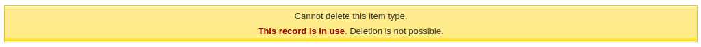
讀者與流通
控制流通與讀者資訊的設定。
讀者類型
讀者類型允許您把讀者組成不同的角色、年齡與類型。
到那裡： 更多 > 管理 > 讀者與流通 > 讀者類型

备注
您可以在管理模組的 :ref:`’欄組態’<column-settings-label>`部份, 自定義此表的列(table id: patron_categories)。
新增讀者類型
勾選頁面上方的 ‘新增類型’ 鈕，就能新增讀者類型
類型代碼：你的新類別的一個辨識符號。
類型代碼須在 10 字元以內 (數字與文字) 且不能與其他類型代碼重複。
此欄位是儲存讀者類型的必備。若空白則出現錯誤。
說明：純文字版本的類型。
該描述將在整個Koha中顯示出來。
此欄位是儲存讀者類型的必備。若空白則出現錯誤。
註冊期間：
以月為單位：如果你的讀者有一個有限的註冊期，就應該填上。例如，學生證在9個月後過期。
截止日期：你可以選擇一個卡片到期的日期。
此欄位是儲存讀者類型的必備。若空白則出現錯誤。
警告
不能在一個類別中同時輸入有效的月份與特定日期。只能二選一。
密碼過期：輸入天數，過期後，讀者必須改變他們的密碼。
年齡要求：與該類別相關的最低年齡（歲）要求。例如，’成年人’讀者類別可以是18歲的最低年齡；這意味著讀者必須至少年滿18歲才能進入該讀者類別。
當建立或更新一個讀者時，如果該讀者對這個類別來說太年輕，就會出現一個警告。

這個值由 update_patrons_category.pl 工作排程使用，以改變太年輕的讀者類別。
年齡上限：與該類別相關的最大年齡（以歲為單位）。例如，’兒童 ‘讀者類別可以有18歲的年齡上限，這意味著讀者可以擁有兒童卡直到他們年滿18歲。
當建立或更新一個讀者時，如果該讀者對這個類別來說太老了，會出現一個警告。
這個值由 update_patrons_category.pl 工作排程使用，以改變太老的讀者類別。
註冊費：如果您向讀者（例如居住在其他地區的讀者）收取註冊費，請輸入金額。
警告
在這個欄位裡只輸入數字及小數。
备注
Depending on your value for the FeeOnChangePatronCategory system preference, this fee will be charged on patron renewal as well as when they are first enrolled.
需要逾期通知：如果你想讓這個類別的讀者收到逾期通知，請選擇’是’。這將使你能夠在 啟用逾期通知。
館員界面上的遺失館藏：根據讀者類別決定是否在館員介面上顯示遺失館藏。
顯示：遺失的館藏顯示在館員介面。
預設隱藏：遺失館藏被隱藏，但館員可以點擊 ‘顯示所有館藏’ 來查看。
备注
只適用於館員介面，因此在沒有權限訪問館員介面的讀者類別上更改此值不會產生任何影響。
預約費：如果你向這個類別的讀者收取預約館藏的費用，請輸入費用金額。
警告
在這個欄位裡只輸入數字及小數。
分類類型: 從六個主要的上層類型中選擇一個
成人：最常見的讀者類型，通常用於一般 ‘讀者’ 類型。
Child: another common patron type.
館員：圖書館館員
組織：組織可以用作專業讀者的擔保人。
專業人士：專業讀者可連結至組織讀者。
統計: 此讀者類型只限統計之用，如館內使用館藏。
此欄位是儲存讀者類型的必備。若空白則出現錯誤。
Can be guarantee: if the patrons of this category can have guarantors, choose yes. This will make the ‘Patron guarantor’ and ‘Non-patron guarantor’ sections appear in the patron form.
分館限制：如有必要，館藏限制可以限制特定類型的讀者只適用於部分分館。選擇 ‘所有分館’，則讓所有圖書館均可被此類型讀者使用。
要選擇多個分館，請在進行選擇時按住 Ctrl 鍵。
Password reset in OPAC: decide whether patrons of this category are allowed to reset their password through the OPAC’s ‘Forgotten password’ function. By default, it will follow the rule set in the OpacResetPassword system preference.
Follow system preference OpacResetPassword.
Allowed: patrons of this category will be able to reset their password through the OPAC regardless of the setting in OpacResetPassword.
Not allowed: patrons of this category will not be able to reset their password through the OPAC regardless of the setting in OpacResetPassword.
Password change in OPAC: decide whether patrons of this category are allowed to change their password through the OPAC. By default, it will follow the rule set in the OpacPasswordChange system preference.
Follow system preference OpacPasswordChange.
Allowed: patrons of this category will be able to change their password through the OPAC regardless of the setting in OpacPasswordChange.
Not allowed: patrons of this category will be not able to change their password through the OPAC regardless of the setting in OpacPasswordChange.
Minimum password length: enter the minimum password length for patrons of this category. Leave blank to use the default length set in the minPasswordLength system preference.
Require strong password: decide whether to enforce a strong password policy (at least one uppercase letter, one lowercase letter and one digit) for patrons of this category. By default, it will follow the rule set in the RequireStrongPassword system preference.
Follow the system preference RequireStrongPassword.
Yes: patrons of this category will be required to have a strong password regardless of the setting in RequireStrongPassword.
No: patrons of this category will not be required to have a strong password regardless of the setting in RequireStrongPassword.
Block expired patrons: decide if this patrons from this category are blocked from performing actions in the OPAC if their card is expired. By default it will follow the rule set in the BlockExpiredPatronOpacActions preference.
Follow the system preference BlockExpiredPatronOpacActions.
Block: patrons of this category whose membership has expired will be blocked from renewing and placing holds in the OPAC, regardless of the setting in BlockExpiredPatronOpacActions.
Don’t block: patrons of this category whose membership has expired will not be blocked from renewing and placing holds in the OPAC, regardless of the setting in BlockExpiredPatronOpacActions.
Check for previous checkouts: if the CheckPrevCheckout system preference is set to either ‘Unless overridden by patron category’ options, you will be able to set the value for this particular patron category here.
Yes and try to override system preferences: Koha will check if the patron already checked out this item, unless the patron’s personal settings prevent it.
No and try to override system preferences: Koha will not check in the patron already checked out this item, unless the patron’s personal settings permit it.
Inherit from system preferences: the setting of the CheckPrevCheckout system preference will be followed.
預設隱私：為該類型的讀者選擇預設的隱私設定。
預設：借出歷史紀錄將被無限期保留，直到 :ref:`batch_anonymize.pl script<cron-anonymize-patron-data-label>`被運行或者有一個手動 :ref:`批次匿名化處理 <patrons-anonymize-bulk-delete-label>被執行。
從來沒有：借出歷史紀錄在還入時是匿名的。統計數據被保留，但借出、館藏和讀者之間的連結被刪除。
永遠：借出歷史永遠不會為此類型的讀者匿名，無論是工作排程或手動匿名化如何。
This setting can be edited by the patron via the OPAC if you allow it with the OPACPrivacy system preference.
從本地預約優先權中排除：選擇是否優先預約此類別的讀者
Default messaging preferences for this patron category: assign advanced messaging preferences by default to the patron category
These default preferences can be changed on an individual basis for each patron. This setting is just a default to make it easier to set up messages when creating new patrons.
备注
This requires that you have EnhancedMessagingPreferences system preference set to ‘Allow’.
警告
這些預設值只適用於新增到系統的新讀者。他們不會編輯現有讀者的偏好。
If you need to apply the default preferences to existing patrons, you can force those changes by running the borrowers-force-messaging-defaults script found in the misc/maintenance folder. Ask your system administrator for assistance with this script.
流通與罰款規則
這些規則設定館藏的流通方式，如何和何時計算罰款與預約的處理方式。
到那裡： 更多 > 管理 > 讀者與流通 > 流通與罰款規則
規則的使用順位是由最特殊至最不特殊，依序取用：
相同圖書館、相同讀者類型、相同館藏類型
相同圖書館、相同讀者類型、所有館藏類型
相同圖書館、所有讀者類型、相同館藏類型
相同圖書館、所有讀者類型、所有館藏類型
預設 (所有圖書館)、相同讀者類型、相同館藏類型
預設 (所有圖書館)、相同讀者類型、所有館藏類型
預設 (所有圖書館)、所有讀者類型、相同館藏類型
預設 (所有圖書館)、所有讀者類型、所有館藏類型
The CircControl and HomeOrHoldingBranch also come in to play when figuring out which circulation rule to follow.
If CircControl is set to “the library you are logged in at” circulation rules will be selected based on the library you are logged in at
If CircControl is set to “the library the patron is from” circulation rules will be selected based on the patron’s library
If CircControl is set to “the library the item is from” circulation rules will be selected based on the item’s library where HomeOrHoldingBranch chooses if the item’s home library or its holding library is used.
If IndependentBranches is set to ‘Prevent’ then the value of HomeOrHoldingBranch is used in figuring out if the item can be checked out. If the item’s home library does not match the logged in library, the item cannot be checked out unless you are a superlibrarian.
重要
至少應設定預設的流通規則。此規則適用於所有館藏類型、所有圖書館與所有讀者類型。可以涵蓋所有不屬於其他規則的狀態。借出時若沒有適用於所有圖書館、所有館藏類型與所有館藏類型的規則讀者就無法借出。
設定流通規則
使用發行規則矩陣，你可以定義取決於讀者類別/館藏類型組合的規則。
备注
矩陣範圍很廣，你可以使用表格頂部的’匯出’按鈕，以Microsoft Excel或CSV格式匯出現有的規則，去查看它們。
要設定你的規則，從下拉選單中選取圖書館（如果你想將這些規則應用於所有的分行，則選擇 “所有圖書館的標準規則”）:
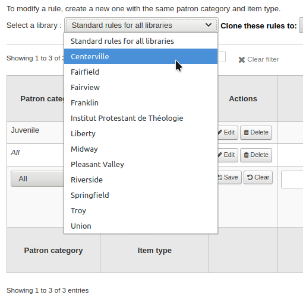
從矩陣裡，您可選擇讀者類型與館藏類型的組合，以適用於規則

首先選擇規則適用的讀者類型。選擇 ‘全部’ 則適用於所有讀者類型
選擇您希望應用此規則的館藏類型。如果您將其保留為 ‘全部’ ，它將應用於該讀者類型的所有館藏類型
如果一個館藏類型有一個上層館藏類型，該規則將顯示為上層->下層。目前借出的數量將被限制在上層類型（包括同級類型）的最大值或特定類型的規則，以較少者為準。
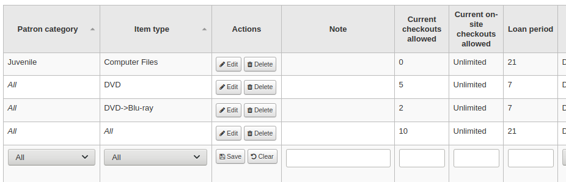
在上面的例子中，有一個DVD館藏類型的規則，最多可以借出5次，還有一個藍光的規則，是DVD的一個下層館藏，最多可以借出2次。這個圖書館的讀者在總共5個DVD或藍光類型的館藏中最多可以借出2張藍光。
總而言之，該圖書館的讀者可以攜帶 : - 0藍光和最多5張DVD - 1藍光和最多4張DVD - 2藍光和最多3張DVD
將流通規則的說明置於說明欄位。有助於記住修改的原因及時間。
在 ‘借出數量’ 欄位輸入的數字就是該類型的讀者同時可以借出的館藏總數。
若把偏好 在館借出 設定為「允許」，也許也需設定在館借出數量的上限。
說明
This setting also depends on the ConsiderOnSiteCheckoutsAsNormalCheckouts preference
從 ‘外借期’ 框中輸入單位數 (天或小時) 設定該類型館藏可以借給讀者的期限。
Define if the loan period should include closed days or not in the ‘Days mode’ column. The option chosen here will override the useDaysMode system preference for this particular rule.
The ‘Default’ option will take the option defined in the useDaysMode system preference
如果你想利用行事曆來跳過圖書館關閉的日子，請選擇’行事曆’選項
如果你想把到期日推遲到下一個開放日，請選擇 ‘Datedue’ 選項
如果你想忽略行事曆並直接計算到期日，請選擇 ‘天數’ 選項。
如果你想使用行事曆將到期日推至下個工作日或下個開館日，請選擇 ‘Dayweek’ 選項
選擇時間單位，日或小時，就是借期與罰款適用的 ‘單位’ 欄
可指定讀者與館藏類型的到期日。所有的借出都使用該指定的到期日：
例如：所有借出的館藏其到期日都被固定。
之前：Koha 將計算正常的到期日。若該到期日在固定到期日之後，則採用該固定到期日。
之後：Koha 將計算正常的到期日。若該到期日在固定到期日之前，則採用該固定到期日。
‘罰款金額’ 應是向讀者收取的逾期罰款。
重要
祗能鍵入數字或小數 (不含幣別符號)。
Enter the ‘Fine charging interval’ in the unit you set (ex. charge fines every 1 day, or every 2 hours). The finesCalendar system preference controls whether the days the library is closed will be taken into account or not.
‘收費時機’ 方便收費間隔超過 1 天的圖書館。
週期結束：寬限期 2 天且罰款週期為 7 天，第一次罰款將是到期日 7 天後，過了第一個週期 (7 天)，才有第一次罰款。
週期開始：寬限期 2 天且罰款週期為 7 天，第一次罰款將是到期日 2 天後，第二次罰款為到期日後 7 天。
The ‘Fine grace period’ is the period of time an item can be overdue before you start charging fines. The FinesIncludeGracePeriod system preference controls if the grace period will be included when calculating the fine or not.
重要
只能設為’日’，不是’小時’
此 ‘每一館藏逾期罰款上限 (金額)’ 是讀者在此館藏類型每一館藏逾期合計的最高罰款
重要
If this field is left blank then Koha will not put a limit on the fines this item will accrue. A maximum fine amount for all overdues can be set using the MaxFine system preference.
若想避免對遺失館藏收取過高費用，可以勾選 ‘重置費用上限’。就不會收取高於購買該館藏的費用。
說明
若設定 ‘每一館藏逾期罰款上限’，若同時適用於逾期罰款時，系統自動選取金額較低者。
若圖書館以停權替代罰款 ‘處罰’ 讀者，則在 ‘停權日數’ 欄位輸入日數。
重要
只能設為’日’，不是’小時’
可在 ‘最長待決期間’ 設定讀者的待決日數
「停權處罰間隔」選項就像「罰款收取間隔」。譬如說，您可處罰某一位讀者因逾期兩天而停權一天。
若允許讀者續借此館藏，在 ‘允許續借’ 欄位裡輸入允許續借的次數。
If you allow unseen renewals (see UnseenRenewals), enter how many ‘unseen’ renewals patrons can make. This is not in addition to the regular renewals, but rather how many ‘unseen’ renewals can be made among the total number of renewals.
若已允許續借，可以藉由 ‘續借期間’ 盒，控制續借的日數 (或小時)。
在 ‘在之前不能續借’ 盒裡選擇可以續借的時機。
若此值空白隨時可續借館藏。否則祗能在此盒指定的單位 (日/小時) 內辦理續借手續。
To control this value on a more granular level please set the NoRenewalBeforePrecision preference.
您可啓用特定館藏/讀者的自動續借功能。除非該館藏被其他讀者預約不然均可被自動續借。
重要
您需要啟用 自動續借工作排程 供此工作使用。
重要
必須在 “不曾續借” 欄填入資料或到期後每天自動續借。
若使用自動續借功能，可以使用 ‘以後不要自動續借’ 限制讀者無限期地借用該館藏。例如：借出 80 天後不允許自動續借。
類似指定到期日的設定，使用 ‘以後不要自動續借 (指定限制)’ 設定。在指定日期後可以停止自動續借。
若這類型的讀者可以對這類型的館藏進行預約，則在 ‘允許預約’ 欄位輸入 (此類型) 館藏的總數。
留空以獲得無限制預約。
如果你想給每個讀者的類型設定一個預約限制，與館藏類型無關，請參閱下面的 :ref:`預設借出和預約政策，按讀者類別<default-checkouts-and-hold-by-category-label>`部分。
如果你想為這個特定的圖書館設立一個獨立於讀者類別和館藏類型的強硬地預約限制，請參見下面的 :ref:`預設的借出、預約和還入政策<default-checkouts-and-hold-policy-label>`部分。
If you want to have a hard hold limit, independent of patron category, item type, and across all libraries, see the maxreserves system preference.
可以指定讀者每日的預約數量。
可以對不同紀錄給予兩個限制預約，後者的限制次數同時適用於前者。例如, 使用者只能預約一個小說館藏。但可以預約多個期刊。
說明
If this is set to a number that is greater than 1, but not Unlimited, then staff will have the option of placing multiple holds at once when placing a hold on the next available item in the staff interface
接著由館藏的可及性影響其預約順位。’允許在架預約’ 選項有三個設定：
是的：任何時間都可以預約該等館藏。在架上或借出都可預約。
若不可及：借出一筆或多筆館藏後，就可以預約。不論架上是否還有館藏都可預約。
若所有都不可及：所有館藏都借出後，才允許預約。有些圖書館的在架圖書以先到先取方式服務。
在 ‘OPAC館藏級別預約’ 下，你還可決定是否讓讀者預約特定的館藏複本。選項為：
允許：允許讀者選擇下個可及或指定的館藏。
不允許：祗允許讀者選取下個可及的館藏。
強制：將允許讀者選擇指定的館藏。
如果你想讓這個類型的讀者能夠對這種類型的館藏提出文章請求，請在 ‘文章請求’ 欄中選擇一個選項
否：這個類別的讀者將不能對這種類型的館藏提出文章請求
是：該類別的讀者將能夠對該類型的館藏提出文章請求，可以是具體的館藏（例如連續期刊），也可以是整個記錄（例如館藏）
僅限記錄：該類型的讀者可以對該類型的記錄提出文章要求，但不能對具體館藏提出要求
僅限館藏：該類型的讀者將能夠對該類型的館藏提出文章請求，但不能對整個記錄提出請求
警告
This column will only appear if the ArticleRequests system preference is enabled.
If you want to use the article request functionality you need to enable it using the ArticleRequests system preference and configure the form using the other related preferences.
如果您 :ref:`對館藏類型<adding-item-types-label>收取租金費，並希望給這個特定的讀者類型提供該費用的折扣，請在’租金折扣’欄中輸入折扣百分比（不含%符號）
If the UseRecalls system preference is enabled, you will have several options to control recalls.
允許催還（總數）：輸入該類型的讀者可對該館藏或記錄目前的催還次數。
每條記錄的催還次數（計數）：輸入這個類別的讀者在這個館藏類型的任何一條記錄上可以有的目前催還次數。
允許在架上的催還：選擇讀者是否可以在有可用的館藏記錄上催還館藏
如果有任何不可用：如果一個記錄有一個以上的館藏，並且至少有一個不可用，讀者將能夠從這個記錄中催還館藏。
如果全部不可用：一個記錄的所有館藏都必須不可用，才能讓讀者從這個記錄中催還館藏
催還到期日間隔（天）：輸入讀者還入已被催還館藏的天數
催還逾期罰款金額：輸入讀者在到期日前不還入催還館藏時將被收取的罰款金額
催還取件期間：輸入讀者前來取件的天數，一但館藏被標記為等待取件，他們就必須來取件。
备注
This value supercedes the value in the RecallsMaxPickUpDelay system preference.
完成後，按 ‘儲存’ 鈕來保存你的修改。要修改一條規則，只需點擊該行開頭或結尾的 ‘編輯’ 按鈕。被編輯的規則行將以黃色突出顯示，數值將出現在表格的底部。編輯底部的數值，然後點擊儲存。
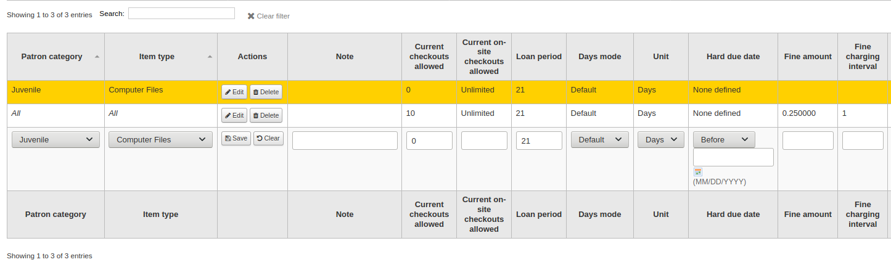
說明
如果在編輯一條規則時，你改變了讀者類型或館藏類型，它將建立一條新的規則。如果值相似，你可以這樣做來重複規則，而不是建立新規則。
或者，你可以用相同的讀者類型和館藏類型建立一個規則，它將編輯現有的規則，因為每個圖書館-讀者類別-館藏類型組合只能有一個規則。
按著規則右方的 ‘刪除’ 按鈕就可以刪除該規則。
從規則矩陣裡複製其他圖書館的規則，以節省時間。此種做法將覆寫該圖書館原來已組態好的規則。
選定複製對象後，將出現確認訊息。
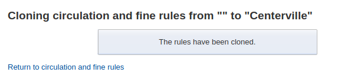
預設借出、預約與還入政策
若沒有設定指定的館藏類型或讀者類型則適用於預設的借出數量與預約政策。這是保險的預設。

若沒有設定指定的館藏類型則從此選單設定適用於所有館藏類型與讀者的規則。
在 ‘借出總數’ 鍵入可以借出的館藏總數
In ‘Total current on-site checkouts allowed’ enter the total number of items patrons can have checked out on site at a time (OnSiteCheckouts needs to be set to ‘Enable’)
在 ‘借出總數’ 鍵入可以借出的館藏總數。
在 ‘預約政策’ 選單裡控制讀者預約的對象
來自任何圖書館：來自任何圖書館的讀者都可以預約此館藏。(預設沒有限制)
來自所屬圖書館：祗有來自館藏所屬圖書館的讀者才能預約此書。
來自所屬圖書館：祗有來自館藏所屬圖書館的讀者才能預約此書。
無可預約的館藏：讀者不能預約此圖書。
在 ‘預約政策’ 選單裡管理讀者預約的對象
任何圖書館
館藏所在的圖書館
讀者預約組
館藏所屬圖書館
館藏所在的圖書館
控制還入館藏的流向
館藏轉移至所屬圖書館
館藏轉移至借出圖書館
流動館藏
館藏浮動時，還入後不必送回 ‘所屬圖書館’
政策設定後，畔選規則右方的 ‘不設定’ 連結，可以取消設定
按讀者類型劃分的預設借出和預約政策
對此圖書館而言，您可指定讀者借出館藏的最大量，而不必理會館藏的類型。
說明
若特定讀者類型可借出量為空白，則沒有限制，除非在特定館藏類型內另有限制。
例如，若讀者可以借出 10 本書與 5 張 DVD 且同時借出的館藏總數不能超過 12。若在這裡鍵入 12 則已借出 10 本書的讀者就祗能再借出 2 張 DVD，總數等於 12。
Default waiting hold cancellation policy
For this library, you can specify if patrons can cancel holds that are already awaiting pickup.
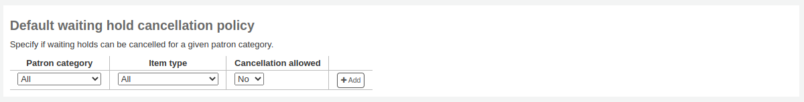
For each patron category and item type combination, choose if these patrons can cancel holds that are already waiting for pickup.
Just like the circulation rules, the more specific rules will apply before the more generic rules (i.e. the “all” patron categories / “all” item types rule will apply only if no other rule exists for this combination).
預設開啟文章請求限制
If ArticleRequests is enabled, you can set a maximum number of open article requests a patron of a category can have at one time.

备注
This will only appear if the ArticleRequests system preference is enabled.
選擇你想限制的讀者類別。
輸入這個類別的讀者在某一特定時間內可以有的開放文章請求的數量
點擊 ‘新增’
預設論文取得費用
If ArticleRequests is enabled, you can set the fee a patron from a given category (or any category) needs to pay in order to request the article.
备注
This will only appear if the ArticleRequests system preference is enabled.
選擇你要新增費用的讀者類型，或選擇 ‘全部’ 為所有讀者設定一個總體費用
备注
某一讀者類型的具體費用將超過所有類型的費用。
例如，如果你把所有類型的費用設置為2美元，而把教職員的費用設置為3美元，那麼教職員將被收取3美元，其他任何讀者將被收取2美元。
輸入費用金額（用句號作為小數點，不要輸入任何符號，例如，輸入5.00表示5美元）
點擊 ‘新增’
這筆費用是向讀者收取的 當請求被放置時。
在通過館員介面或OPAC提出請求時，會出現一條訊息，告知館員或讀者，每次請求都要向讀者收費，並告知收費金額。
遺失館藏的賠償費用在還入政策中
Here, you can specify the default policy for lost item fees on return.
Refund lost item replacement fee: choose whether or not the item’s replacement cost is refunded when the lost item is returned.
Refund lost item charge: the replacement cost is refunded. This might create a credit to be paid out to the patron if they had already paid the fee.
Refund lost item charge (only if unpaid): the replacement cost is refunded only if it hasn’t yet been paid.
Refund lost item charge and charge new overdue fine: the replacement cost is refunded and overdue fines are calculated as of today.
Refund lost item charge and restore overdue fine: the replacement cost is refunded and fines are restored as of the day the item was declared lost.
Leave lost item charge: the replacement cost stays in the patron’s account.
Refund lost item processing fee: choose whether or not the item’s processing fee is refunded when the lost item is returned.
Refund lost item processing charge: the processing fee is refunded. This might create a credit to be paid out to the patron if they had already paid the fee.
Refund lost item processing charge (only if unpaid): the processing fee is refunded only if it hasn’t yet been paid.
Leave lost item processing charge: the processing fee stays in the patron’s account.
This policy will apply to this library. This rule is to be used with the RefundLostOnReturnControl system preference.
You can limit the number of days during which a lost item is refundable using the NoRefundOnLostReturnedItemsAge system preference.
預設各館藏類型的預約政策
對此圖書館而言，您可以編輯館藏類型裡的規則使其適用於所有讀者類型。
不同的預約政策有以下的影響：
來自任何圖書館：來自任何圖書館的讀者都可以預約此館藏。(預設沒有限制)
來自所屬圖書館：祗有來自館藏所屬圖書館的讀者才能預約此書。
來自所屬圖書館：祗有來自館藏所屬圖書館的讀者才能預約此書。
無可預約的館藏：讀者不能預約此圖書。
重要
Note that if the system preference AllowHoldPolicyOverride set to ‘allow’, these policies can be overridden by your circulation staff.
重要
這些策略是根據ReservesControlBranch系統去應用的。
在 ‘預約政策’ 選單裡管理讀者預約的對象
任何圖書館
館藏所在的圖書館
贊助團體
館藏所屬圖書館
館藏所在的圖書館
不同的還入政策有以下的影響：
館藏還入所屬圖書館：提示館員將此館藏還入所屬圖書館
重要
If the AutomaticItemReturn preference is set to automatically transfer the items home, then a prompt will not appear
館藏還入當初借出的圖書館：提示館員將此館藏還入當初借出的圖書館
重要
If the AutomaticItemReturn preference is set to automatically transfer the items home, then a prompt will not appear
館藏浮動：館藏留在還入的圖書館，不會送至其他地方直到以人工要求或還入其他圖書館
例如想把新增館藏或 DVD 留在本館，就可以設定 ‘預約政策’ 至 ‘來自所屬圖書館’，祗有館藏所屬圖書館與讀者所屬圖書館相同時，才能被預約。您可完全禁止借出特定館藏。也是讓館藏留在所屬圖書館的浮動館藏設定。
备注
The library whose return policy is used is determined by the CircControlReturnsBranch system preference.
讀者屬性類型
到那裡： 更多 > 管理 > 讀者 & 流通 > 讀者屬性
Patron attributes can be used to define custom fields to associate with your patron records. In order to enable the use of custom fields you need to set the ExtendedPatronAttributes system preference.
此欄位常用於學號或身份證號碼。
Adding patron attribute types
勾選頁面上方的 ‘新增讀者屬性類型’ 鈕，就能新增新增讀者屬性類型
Patron attribute type code: enter a short code to identify this field
警告
此欄位的代碼最多 10 個字元 (祗限數字與字母)
警告
設定之後不能改變
Description: enter a longer (plain text) explanation of what this field will contain
Repeatable: check this box if a patron record can have multiple values of this attribute.
警告
設定之後不能改變
Unique identifier: check this box if a value is given to a patron record, the same value cannot be given to a different record.
獨特的屬性可做為 讀者匯入工具 的匹配點
警告
設定之後不能改變
Display in OPAC: check this box to display this attribute on a patron’s details page in the OPAC.
Editable in OPAC: check this box to enable patrons to edit this information in the OPAC.
Searchable: check this box to make this attribute searchable in the staff interface’s patron search.
Mandatory: check this box if the attribute must be filled for every patron
Display in patron’s brief information: check this box to make this attribute visible in the patron’s short detail display on the left of the checkout screen and other patron pages
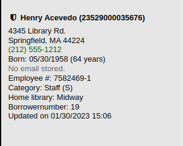
Authorized value category: if one is selected, the patron record input page will only allow values to be chosen from the authorized value list.
You will first need to add an authorized value list for it to appear in this menu
警告
An authorized value list is not enforced during batch patron import.
Library limitations: if you would like this attribute to only be used by specific branches you can choose those branches from this list. Choose ‘All branches’ to show it for all libraries.
警告
Patrons with attributes already set for them will not be altered. The branch limitation only limits the field based on the library at which the current staff is logged in.
If an attribute is set for a patron, it will be displayed in their file to all staff. However, only staff from the selected branches will be able to edit it.
Category: if you’d like to only show this attribute on patrons of one type choose that patron category here
Class: if you have a lot of attributes it might be handy to group them so that you can easily find them for editing. If you create an authorized value for PA_CLASS it will show in the ‘Class’ drop-down menu and you can then change your attributes page to have sections of attributes
Click ‘Save’ to save your new attribute.
Once added, your attribute will appear on the list of attributes and also on the patron record add/edit form

Editing/deleting patron attribute types
Each patron attribute has an edit and a delete button beside it on the list of attributes.
部份欄位新增後即不可編輯：
讀者屬性類型代碼
可重複
唯一辨識碼
不能刪除使用中的屬性。
圖書館轉移限制
根據送出圖書館、接收圖書館與館藏類型，轉移的數量有不同的考量。
到那裡： 更多 > 管理 > 讀者 & 流通 > 圖書館轉移限制
必須先設定 UseBranchTransferLimits 參數為 ‘強迫’，此等規則才生效。
開始之前，您將要選擇設定限制的圖書館。

轉移限制由管理區塊 容許值 的位置代碼決定。

合集代碼將顯示在勾選盒之上的分頁：
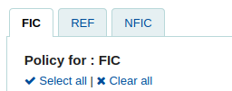
勾選您在上方選擇的館藏代碼（在下面的例子中是FIC）中允許您的館藏被轉移到的圖書館的框。

在以上的例子裡，Centerville 圖書館允許讀者還入館藏至任何圖書館，但 Liberty 與 Franklin 的館藏必須還回至其所屬的圖書館。
轉移成本矩陣
The transport cost matrix lets a library system define relative costs to transport books to one another. In order for the system to use this matrix you must first set the UseTransportCostMatrix preference to ‘Use’.
重要
轉移費用矩陣對館藏的控制權較高，未啟用轉移費用矩陣時 Koha 參照 :ref:`StaticHoldsQueueWeight <holds-queue-system-preferences-label>`偏好的設定。
成本是數字，從任意最大值(如1或100)到最小值0。如：可以把圖書館間的距離視為 ‘成本’。或以郵遞區號為單位。同個郵遞區號的成本為 1，接鄰郵遞區號的成本為 2，餘此類推。
勾選儲存格，解除 ‘不啟用’ 盒，鍵入您的 ‘成本’，就能變更該轉移成本

鍵入成本，按下鍵盤的 ‘Enter’ 鈕或點選矩陣的 ‘儲存’ 鈕，就能夠儲存您的更新。
說明
來自與送去圖書館一樣時 NULL 值沒有關係。然而，還是應該填入 0。在其他的送去/來自裡，NULL 值就是停用的意思。所以，不要讓任何值空白。最好還是設定一個數值 (即使您選擇停用的送去/來自選項)。
館藏流通警示
圖書館可決定是否讓讀者自動收到流通事件通知(還入與借出)。
到那裡： 更多 > 管理 > 讀者 & 流通 > 館藏流通警示
這些偏好以讀者類型與館藏類型為基礎。
重要
個別讀者的訊息偏好可以取代此偏好的設定。
設定流通警示：
從頁面上端的下拉式選單選定您的圖書館
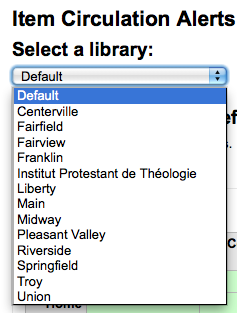
保持選單為 ‘預設’，就能設定所有的圖書館
預設所有的館藏與讀者都告知借出與還入的狀態。點選館藏與讀者的組合，就能停止此告知。

在以上的例子裡，青少年及兒童不再收到借出資訊。
縣市與鄉鎮
為了標準化讀者的鍵入資料，您可在所屬區域內設定縣市或鄉鎮，新讀者祗需從表單勾選即可。
到那裡： 更多 > 管理 > 讀者 & 流通 > 縣市與鄉鎮
新增縣市
點選頁面上端的 ‘新增縣市’ 鈕，輸入縣市名、狀態、郵寄區號與國家，就能新增縣市。

點選送出鈕後，儲存該縣市並列在縣市與鄉鎮頁面

任何時間都可以編輯或刪除縣市。
檢視新增讀者表單的縣市
以 ‘新增縣市’ 表單設定縣市，則在新增或編輯讀者紀錄時，可從下拉選單看到這些縣市。

此方式減輕鍵入縣市的壓力，不會出現潛在的錯誤或不當的郵遞區號。
Curbside pickup
The curbside pickup feature is used to set up appointments with patrons for them to pick up their holds. This section is used to configure the pickup windows
Get there: More > Administration > Patrons and circulation > Curbside pickup
备注
In order to use this module, you must enable it with the CurbsidePickup system preference.
Setting up curbside pickup
From the configuration page, click the tab corresponding to the library for which you’re setting up curbside pickup
填寫表格
Enable: check this box to enable curbside pickup at this library
Pickup interval: enter the number of minutes each curbside pickup interaction will take
Maximum patrons per interval: enter the number of patrons who can pickup in the same interval
Patron-scheduled pickup: check this box if you want to allow patrons to set up their own curbside pickup appointment through the OPAC
Enable for waiting holds only: check this box if curbside pickup should be limited to patrons who have holds awaiting pickup
Create curbside pickup slots
For each slot, enter the day of the week, the starting and ending hours of the time slot in which patrons can come
these can be your opening hours, if you allow curbside pickup throughout the day, or specific time slots in which you allow patrons to come by
For the hours, the format must be XX:XX (numbers with a colon) and it must be in 24-hour format (e.g. 1 PM is 13:00)
點擊 ‘新增’
Click ‘Save configuration’
Do this for every library that offers curbside pickup.
Patron restrictions
If you are using patron restrictions, you can manage the restriction types available from here.
Patron restrictions are enabled by the PatronRestrictionTypes system preference.
备注
The manage_restrictions (or superlibrarian) permission is required to access this page.
Get there: More > Administration > Patrons and circulation > Patron restrictions
Adding a restriction type
To add a new restriction type, click the ‘New restriction’ button at the top of the page.
Code: enter a code for the restriction. Codes are limited to 50 characters and should not contain spaces, diacritics, or special characters.
Name: enter the name for the restriction. The name will be the one displayed throughout Koha.
Once you click ‘Save’, your restriction will be saved and will be listed in the table of restriction types.
Locally created restriction types can be set to set as the default restriction type to use when manually adding a restriction to a patron account. This can be achieved using the ‘Make default’ button.
You can also delete any locally created restriction types using the ‘Delete’ so long as they have not been assigned as the default.
核算
到那裡： 更多 > 管理 > 核算
此區塊處理管理讀者帳號的參數。
借方類型
到那裡： 更多 > 管理 > 核算 > 借方類型
在此設定人工收取的讀者費用。
進入此頁面後，可看到已加入系統的圖書館清單。
按下 “顯示所有借方類型” 就能看到預設的系統費用。
按下 “篩選系統的借方類型” 就能看到人工費用。
系統借方類型
在 Koha 安裝若干借方類型。大部份係依照 Koha 的政策自動產生的費用。
ACCOUNT (新增帳號費用)：登錄時，向讀者收取的費用。可以在 讀者類型設定 下的 ‘註冊費’ 變更它。
ACCOUNT_RENEW (帳號更新費用)：帳號更新時，向讀者收取的費用。就像前者的 ACCOUNT 借方類型，可以在 讀者類型設定 下的 ‘註冊費’ 變更它。
LOST (館藏遺失)：在讀者帳號下發生館藏遺失時，向其收取的費用。其金額設定在 館藏 ‘重置費用’ 欄位 或在 館藏類型的預設重置費用。也可以人工方式新增於 人工收據 分頁。
MANUAL (人工費用)：安裝 Koha 時預設的人工費用。不是 Koha 自動收取的費用，可以在 人工收據 分頁裡新增的。
NEW_CARD (新增借書證費用)：安裝 Koha 時另個預設的人工費用。不是由 Koha 自動收取，而是在 人工收據 分頁裡新增的。
OVERDUE (逾期罰款)：發生逾期時，自動向讀者收取的費用。其金額設定在 流通與罰款規則 內。
PAYOUT (圖書館對讀者的付款)：當圖書館向讀者報銷(例如多付的費用)時，就用這個。
PROCESSING (遺失館藏處理費用)：發生遺失館藏時，自動向讀者收取的費用。其金額可以設定在 館藏類型 的 ‘處理費用 (遺失)’。
RENT (租金)：若在 館藏類型 下設定租金，在借出時自動向讀者收取。
RENT_DAILY (日租金)：若在 館藏類型 設定日租金，則在借出時，向讀者收取。
RENT_DAILY_RENEW (續借的日租金)：若在 館藏類型 設定日租金，則在續借時，向讀者收取。
RENT_RENEW (續借出租的館藏)：若已在 館藏類型 設定租金，則向讀者自動水續借的租金。
RESERVE (預約費用)：預約時，自動向讀者收取的費用。必須在 讀者類型 設定 ‘預約費’。
RESERVE_EXPIRED (Hold waiting too long): this is charged automatically to the patron’s account if they haven’t picked up their hold after the number of days defined in the ExpireReservesMaxPickUpDelay system preference. The amount is set in the ExpireReservesMaxPickUpDelayCharge system preference.
新增借方類型
新增借方類型：
勾選 ‘新增借方類型’
Debit type code: enter a code (limited to 64 letters).
警告
Codes should be limited to letters, numbers, and underscores (_).
Avoid spaces, diacritics, and special characters.
Default amount: enter the default amount.
备注
Staff will be able to change this amount when adding the charge to the patron’s account, if necessary.
重要
Do not enter currency symbols. Only write the amount with a decimal point (for example, 5 or 5.00 instead of $5).
Description: write a description, this description will be used in the drop-down menu when adding a new charge to a patron’s account or when making a sale in the point of sale as well as in their transaction history.
Can be manually invoiced: check this box if this debit type can be added manually by staff to a patron’s account via the manual invoices.
Can be sold: check this box if this debit type can be used in the point of sale.
Included in noissuescharge: check this box if this debit type should be included when calculating the amount owed by the patron for the noissuescharge system preference. This system preference is used to block checkouts when a patron owes over a certain amount of money to the library.
Libraries limitation: if necessary, select the libraries where this debit type can be used. Choosing ‘All libraries’ will make the debit type available everywhere.
备注
按 ‘Ctrl’ 鍵，就能選擇多個圖書館。
勾選 ‘儲存’
編輯已有的貸方類型
您只能修改已添加的欠款類型，以及’人工支付’。
編輯欠款類型:
點擊欠款類型右側的 ‘編輯’ 按鈕
編輯任何欄位
勾選 ‘儲存’
新增欠款類型
如果您不再需要欠款類型，則可以將其存檔。
說明
由於在讀者的帳戶部分中使用了欠款類型，因此無法刪除欠款類型。
勾選欠款類型頁面上方的 ‘新增欠款類型’ 鈕，就能新增欠款類型。
恢復儲存的欠款類型
如果您需要再次使用已儲存的欠款類型，只需單擊借記類型右側的’恢復’按鈕即可。
這將使其再次可用。
還款類型
到那裡： 更多 > 管理 > 核算 > 還款類型
這是你定義你可以給讀者的人工還款的地方。
當您第一次進入該頁面時，您只會看到系統中已經定義的還款。
你可以通過點擊 “顯示所有還款類型 “查看預設的系統還款類型。
你可以通過點擊 “篩選系統還款類型 “就能看到人工還款類型。
系統還款類型
Koha安裝了幾種還款類型。其中大多數是自動還款，根據你在Koha其他地方設定的新增政策。它們不能被刪除。
CANCELLATION（取消收費）：當 :ref:`取消讀者帳戶中的收費 <charging-fines/actions-label>`時使用
CREDIT（信用）：這是用於 :ref:`人工還款 <creating-manual-credits-label>`給你的讀者。
DISCOUNT（適用於讀者罰款的折扣）：這用於 折扣罰款和收費。
FORGIVEN（原諒）：這用於 :ref:`人工還款<creating-manual-credits-label>`給你的讀者。
LOST_FOUND（遺失館藏費用退款）：這是在以前遺失的館藏被歸還時使用。如果你退還遺失的費用（見 預設的遺失館藏費用還入政策），這個還款將被用於退還費用。
OVERPAYMENT（超額退款）：當讀者支付了過多的費用時，這將自動應用於讀者的帳戶。這主要是在讀者已經支付了全額罰款的情況下倒退還入時使用。
PAYMENT（支付）：正如其名，這是用來表示 費用支付。
PURCHASE（購買）：當通過 :ref:`銷售點模組<point-of-sale-label>`進行支付時使用。
REFUND（適用於讀者罰款的退款）：當 :ref:`退還罰款或收費的款項<charging-fines/actions-label>`時使用。
WRITEOFF（註銷）：當 :ref:`註銷罰款或收費<pay-and-writeoff-fines-label>`時使用。
新增還款類型
新增還款類型：
勾選 ‘新增還款類型’
鍵入代碼 (最多64個字元)
警告
Codes should be limited to letters, numbers, and underscores (_).
Avoid spaces, diacritics, and special characters.
寫下說明
新增還款與其交易紀錄時，將在下拉選單出現該等說明
如果這種還款類型可以由館員通過 :ref:`人工還款<creating-manual-credits-label>`手動添加到讀者的帳戶中，請勾選’可以人工添加嗎?’
If you need this credit type to be sequentially numbered, check the ‘Enable credit number’. The format of the number is defined in the AutoCreditNumber system preference.
若還款類型只限於指定分館，可以在 ‘圖書館限制’ 中選定該等圖書館
說明
按 ‘Ctrl’ 鍵，就能選擇多個圖書館。
勾選 ‘儲存’
編輯已有的還款類型
你只能修改你已經新增的還款類型。
編輯還款類型:
點擊還款類型右邊的’編輯’按鈕
編輯任何欄位
勾選 ‘儲存’
新增還款類型
如果您不再需要還款類型，則可以將其存檔。
說明
無法刪除還款類型，因為它們用於讀者的帳號部分。
勾選還款類型頁面上方的 ‘新增還款類型’ 鈕，就能新增還款類型。
恢復儲存的還款類型
如果您需要再次使用已儲存的還款類型，只需單擊還款類型右側的’恢復’按鈕即可。
這將使其再次可用。
現金列表
到： 更多 > 管理 > 帳戶 > 現金列表
This feature is enabled through the UseCashRegisters system preference.
如果尚未定義現金收銀機，將會邀請您建立一個。
除此以外，您將會看見所有的收款台列表。
在’動作’列中，您可以選擇編輯現金列表，將其中之一設置為預設值或刪除預設狀態，然後歸檔或恢復已歸檔的列表。
預設狀態僅在每個分館具有多個列表的圖書館中有用。預設列表將在以下情況下預選:ref:輸入付款 <pay-and-writeoff-fines-label>。如果每個分館只有一個現金列表，則付款時會選擇分館的現金列表。
新增一個現金列表
點選 ‘新增現金列表’
給收款台起個名字
您也可以選擇添加說明
選擇使用此現金列表的圖書館
最後輸入初始浮動金額，即現金列表中的金額
點擊 ‘新增’
Plugins
This section is used to manage all types of plugins.
重要
Before using plugins, make sure that they are enabled in the configuration file.
See also the tool plugins and report plugins sections.
Get there: More > Administration > Plugins
Managing plugins
This section is used to view, manage and configure all types of plugins.
The page will show all currently installed plugins.
If you have a lot of plugins, you can view a subset by clicking ‘View plugins by class’.
Installing a plugin
To install a new plugin manually,
Click ‘Upload plugin’.
Choose the KPZ file on your computer and click ‘Upload’.
If you configured external plugin repositories, you will have a search box at the top of the page to search these repositories and install directly from there without having to download and upload the KPZ file. To install a plugin from a repository,
Enter a search term in the search box.
Click ‘Install’ to the right of the plugin.
Some plugins might need to be enabled before usage.
To enable a plugin,
Click the ‘Actions’ button to the right of the plugin and choose ‘Enable’
Using a plugin
All plugins are different. Some might need configuration before usage, others are simply run.
Click the ‘Actions’ button and choose ‘Configure’ or ‘Run’.
Follow the instructions issued by the plugin’s creator.
Disabling a plugin
If you need to temporarily stop the plugin from taking effect, you can disable it.
Click the ‘Actions’ button to the right of the plugin and choose ‘Disable’
This will not uninstall the plugin. It will remain installed, but will not have any effect on your Koha installation.
Deleting a plugin
To delete or uninstall a plugin,
Click the ‘Actions’ button to the right of the plugin and choose ‘Delete’
This will remove the plugin from your Koha installation. Any action or effect it had will stop. If you need to, you can reinstall it later, provided it is still available.
Jobs
This section is used to manage background jobs. Jobs are tasks that are queued in the system to be treated when the server has the resources to do it, such as batch record modification and others.
Get there: More > Administration > Jobs
备注
This section will only be available to staff members with the manage_background_jobs (or superlibrarian) permission.
Managing jobs
By default, when accessing the page, you will only see current jobs and jobs enqueued in the last hour.
To see all jobs, uncheck the boxes at the top of the page.
Current jobs only: uncheck this to include finished jobs
Only include jobs enqueued in the last hour: uncheck this to include jobs enqueued earlier
You can search for jobs using the search boxes under the table headings.
To the right of each job, there are action buttons.
View: this will display the details of the job, including, but not limited to:
Job ID: this is the identifier of the job in the Koha database, an incremental number
Status: the status of the job
New: the job has been queued
Cancelled: the job was cancelled by a user
Finished: the job was successfully carried out
Started: the job was started, but it is not yet finished
Running: the job is currently being executed
Failed: the job was started, but failed for some reason
Progress: indicates how much of the job is done
Type: indicates the type of job
Batch bibliographic record modification: batch of bibliographic records to be modified.
Batch bibliographic record deletion: batch of bibliographic records to be deleted.
Batch authority record modification: batch of authority records to be modified.
Batch authority record deletion: batch of authority records to be deleted.
Batch item record modification: batch of items to be modified.
Batch item record deletion: batch of items to be deleted.
Batch hold cancellation: a batch of holds to be cancelled (when using the ‘Cancel selected’ button).
Create eHoldings titles: titles to be created from a list in the ERM module.
Update Elasticsearch index: bibliographic or autority records, or items to be updated in the Elasticsearch index. Any changes to a bibliographic or authority record, or item trigger an update of the index, including changes in circulation status.
Holds queue update: when the RealTimeHoldsQueue system preference is enabled, changes to holds trigger an update of the holds queue.
Staged MARC records for import: bibliographic or authority records to be staged for import.
Import MARC records: staged bibliographic or authority records to be imported in the catalog.
Revert import MARC records: imported bibliographic or authority records to be unimported.
Queued: date and time when the job was queued
Started: date and time when the job was started
Ended: date and time when the job was finished
Report: this section will contain messages specific to the type of job (for example, number of records modified, in the case of batch record modification)
Detailed messages: this section will contain messages specific to the type of job (for example, which records were modified, in the case of batch record modification)
Cancel: for jobs that are still new or have started, it’s possible to cancel them
目錄管理
編目之前先設定這些控制。
到那裡： 更多 > 管理 > 編目
MARC 書目框架
將框架視為新增書目紀錄的模板。可編輯或刪除 Koha 預設的框架，館員可新增自己需用的框架。
到那裡： 更多 > 管理 > 編目 > MARC 書目框架
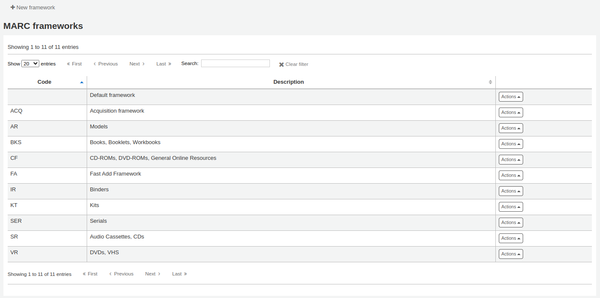
重要
不要刪除或編輯預設框架，因為會造成編目時的困難 - 總是依照預設框架新增模版，或改變其其他的框架。
备注
This section will only be available to staff members with the manage_marc_frameworks (or superlibrarian) permission.
Adding a new framework
新增框架
點 ‘新增框架’
Code: enter a code of 4 or fewer characters, avoiding spaces, diacritics, or other special characters.
Description: enter a more detailed definition of your framework, this is what will be displayed in Koha.
勾選 ‘送出’
Once your framework is added click ‘Actions’ to the right of it on the list of frameworks and choose ‘MARC structure’
將詢問選擇一個既有框架為新框架的基礎，以減輕新增框架的工作
螢幕顯示您的框架後就可依照 編輯分欄 的指示，編輯或刪除每個欄位
Editing existing frameworks
Clicking ‘Actions’ and then ‘Edit’ to the right of a framework will only allow you to edit the description for the framework.
Editing framework fields and subfields
Frameworks are made up of MARC fields (tags) and subfields. To make edits to the fields and subfields associated with the framework you must click on ‘Actions’ and then ‘MARC structure’.
重要
Whenever you make changes to the framework fields and subfields, make sure to run the MARC bibliographic framework test.
Editing a MARC field (tag)
After clicking on ‘MARC structure’ you will be taken to a screen listing all the available tags for that framework and you can search for the tag you need. To make edits to a MARC field click on ‘Actions’ on the right of the field and choose ‘Edit tag’.
下一個螢幕顯示欄號的細節。
Tag: the MARC tag, or field number, is uneditable.
Label for lib: text that will show in the staff interface MARC view, and in the basic editor if the advancedMARCeditor system preference is set to display labels.
备注
If you use XSLT (see the XSLTDetailsDisplay system preference), the labels for the ‘Normal’ view are defined in the XSLT stylesheet.
This will not affect the ‘Normal’ view unless you don’t use XSLT.
Label for OPAC: text that will show on the MARC view in the OPAC.
备注
If you use XSLT (see the OPACXSLTDetailsDisplay system preference), the labels for the ‘Normal’ view are defined in the XSLT stylesheet.
This will not affect the ‘Normal’ view unless you don’t use XSLT.
Repeatable: when checked, the field will have an icon next to it in the basic editor, allowing you to add multiples of that tag.
Mandatory: when checked, the record cannot be saved unless the field has a value. In the basic editor, a ‘Required’ flag will display as a prompt.
Important: when checked, the field will generate a warning if it is not filled, but unlike ‘Mandatory’, you will still be able to save your record nonetheless. In the basic editor, an ‘Important’ flag will display as a prompt.
Indicator default values: add default values for indicators here so that they will be pre-filled to save time when cataloging, but can still be edited if required.
Authorized value: define an authorized value pull down list for the catalogers
警告
欄位級別的容許值選項不起作用。
Click ‘Save changes’ to save any modification.
Editing a MARC subfield
要編輯與欄號關聯的 分欄，請點擊框架欄位列表中欄號右側的 ‘執行’ 和 ‘編輯分欄’。每個欄位都有自己的欄標，其中包含三個部分 - 基本限制，進階限制和其他選項。
對每個分欄你可以設定以下基本限制選項
Subfield code: this is the MARC subfield code, this wouldn’t normally be changed.
Text for librarian: text that will show in the staff interface MARC view, and in the basic editor if the advancedMARCeditor system preference is set to display labels.
备注
If you use XSLT (see the XSLTDetailsDisplay system preference), the labels for the ‘Normal’ view are defined in the XSLT stylesheet.
This will not affect the ‘Normal’ view unless you don’t use XSLT.
Text for OPAC: text that will show on the MARC view in the OPAC.
备注
If left empty, the ‘Text for librarian’ is used instead
备注
If you use XSLT (see the OPACXSLTDetailsDisplay system preference), the labels for the ‘Normal’ view are defined in the XSLT stylesheet.
This will not affect the ‘Normal’ view unless you don’t use XSLT.
Repeatable: when checked, the field will have an icon next to it in the basic editor, allowing you to add multiples of this subfield.
Mandatory: when checked, the record cannot be saved unless the subfield has a value. In the basic editor, a ‘Required’ flag will display as a prompt.
Important: when checked, the field will generate a warning if it is not filled, but unlike ‘Mandatory’, you will still be able to save your record nonetheless. In the basic editor, an ‘Important’ flag will display as a prompt.
在欄標中管理：定義顯示分欄的欄標。
重要
給定欄位的所有分欄必須位於同一選項卡中或被忽略。忽略表示不管理分欄。
警告
When importing records, or editing existing records, subfields that are managed in tab ‘ignore’ will be deleted. If you still wish to keep the subfields, but hide them, use the ‘Visibility’ options below.
對每個分欄你可以設定以下進階限制選項
預設值：設定顯示的欄位做為預設值，仍可編輯，若重複使用說明或在欄位有相同的值，就很節省時間。
备注
您可以在此處使用多個值，這些值將在創建新記錄時自動替換：
<<MM>> - 當前月份，兩碼
<<DD>> - 當前日期，兩碼
<<YY>> - the current year, 2 digits
<<YYYY>> - 當前年份，四碼
<<USER>> - 當前登入者的用戶名
例如：預設值為”<<MM>>/<<DD>>/<<YYYY>>”（不含引號）將以 “01/21/2021 “的格式列印目前日期。
备注
When those default values are filled depends on the ApplyFrameworkDefaults system preference.
Max length: enter a value here to limit the number of characters that can be entered in the subfield.
Visibility: allows you to select from where this subfield is visible or hidden. Check the boxes where you would like the field to show, and uncheck the boxes where you would like it hidden.
OPAC: when checked, this will make the subfield available for display in the OPAC. For non-XSLT views, the field will be displayed. For XSLT views, it will depend on the stylesheet.
Staff interface: when checked, this will make the subfield available for display in the staff interface. For non-XSLT views, the field will be displayed. For XSLT views, it will depend on the stylesheet.
Editor: when checked, this will make the subfield available for modification in the basic editor.
Collapsed: when checked, the subfield will be hidden in the basic editor, but will display when the field label is clicked to expand all subfields.
Flagged: when checked, the subfield will be unavailable and hidden from all views (equivalent to all boxes being unchecked).
Is a URL: if checked, it means that the subfield is a URL and can be clicked.
連結: 如果你在這裡輸入一個索引名稱，在館員介面的MARC詳細檢視圖中的分欄後面會出現一個連結。如果館員點擊該連結，就會用該索引和分欄的內容進行目錄檢索。
Koha link: this field is used to create a link between the MARC subfield and a column in the items, biblioitems, and biblio database tables. The mappings can be changed from the Koha to MARC mapping page.
每個分欄都可以設定以下的選項
Authorized value: means the value must be chosen from a drop-down menu generated from the authorized value list.
In the example below, the LANG authorized value category has been set to 041$a.
This creates a drop-down menu in the basic editor.
Thesaurus: means that the value is linked to the authority catalog of the selected category. Authority categories are managed in the Authority types section.
Plugin: means the value is calculated or managed by a cataloguing plugin. Cataloguing plugins, or value builders, can do almost anything.
例如：
For call numbers there is an option to add a call number browser next to the call number subfield so that you can identify which call numbers are in use and which are not. Simply choose the cn_browser.pl plugin. Learn more in the cataloging section of this manual.
選擇 upload.pl 允許 上傳連結至記錄的檔案至 Koha 就能經由編目上傳檔案。
UNIMARC 的每個 1xx 欄位都有外掛程式可處理其內容。此外掛程式對編目員的工作極有幫助！還有另兩個外掛程式(unimarc_plugin_210c 與 unimarc_plugin_225a 可以 “神奇地” 從ISBN 找到編輯器，供編輯館藏清單之用)
如果你想對260b和264b的出版商啟用自動完成搜尋，你可以將外掛設置為marc21_field_260b.pl. 當你開始輸入出版商名稱時，你將根據目錄中已有的出版商名稱得到搜尋結果。
To save your changes, click ‘Save changes’.
小技巧
You can drag and drop the subfield tabs to change the order in which they appear when cataloging with the basic editor.
By default, they will appear in alphanumeric order (0-9, then a-z).
Adding fields to frameworks
If a framework doesn’t contain a field that you require, you may need to add it. To add a field to a framework click the ‘New tag’ button at the top of the framework definition.
開啟空白表單供鍵入 MARC 欄位資料
Enter the field number for your new tag. The process for entering the remainder of the settings for the new tag is the same as those found in the editing fields and subfields in frameworks section of this manual.
完成後，按 ‘儲存改變’ 鈕，將出現新的欄位。
你需要為你的新欄號新增至少一個分欄，然後在你編目時才會出現在你的框架中。
Click on the ‘Actions’ button for your new tag and then ‘Edit subfields’. Click on the ‘New’ tab and enter your subfield code. The process for entering the remainder of the settings for the new subfield is the same as those found in the editing fields and subfields in frameworks section of this manual.
Importing and exporting frameworks
每個框架旁有個連結供匯入或匯出框架之用。
匯出框架
To export a framework, click the ‘Export’ option in the ‘Actions’ button to the right of the framework title.
按了 ‘匯出’ 後將提示選擇匯出檔案的格式。
以此方式匯出的框架可以用匯入選項匯入其他的 Koha 系統。
匯入框架
從其他的 Koha 匯入是新增框架最簡單方法之一。須依照 使用以上的說明 匯出框架後才能被匯入。
To import a framework you first need to create a new framework. Once you have that framework, click ‘Actions’ then ‘Import’ to the right of the new framework.
將提示您從電腦內找出匯入的框架檔。
匯入檔案前要求您確認。

As your file is uploaded, you will see a spinning icon to indicate that the system is working.
Once your import is complete you will be brought to the framework edit tool where you can make any changes you need to the framework you imported.
Koha 對映至 MARC
While Koha stores the entire MARC record, it also stores common fields for easy access in various tables in the database (mainly the items, biblioitems, and biblio tables). Koha to MARC mapping is used to tell Koha where to find these values in the MARC record. Whenever a record is added or changed, this mapping will be used to update the linked database column. The information from the database columns is used as a way to quickly look up important information without having to parse the full MARC record. It is used for displaying information in a lot of pages and can also be used in reports.
In many cases, you will not have to change the default values set at the time of the installation, but it is important to know that the tool is here and can be used at any time.
警告
If you change mappings after data has been added to your catalog, ask your system administrator to run misc/batchRebuildBiblioTables.pl. This will update the values in the database columns for all your records.
到那裡： 更多 > 管理 > 編目 > Koha 對映至 MARC
备注
This section will only be available to staff members with the manage_marc_frameworks (or superlibrarian) permission.
本表單顯示可以對映至 MARC 欄位的資料庫欄位。
也可按欄位右方的 ‘新增’ 鈕，可以新增映。

Write in the MARC field and subfield you would like to map, separated by a comma, to this Koha field (for example, “264,a”) and click the ‘OK’ button.
备注
可以把多個 MARC 欄位連結至一個資料庫欄位。如， 260$a 與 264$a 可同時連結至 biblioitems.place 欄位。
按 ‘移除’ 鈕，可以清除對映至資料庫欄位的連結。
备注
All changes are immediate. Records created or edited after the change will immediately have the new mappings. However, if you want to update the mappings for records already in the catalog, ask your system administrator to run misc/batchRebuildBiblioTables.pl. This will update the values in the database columns for all your records.
MARC 書目框架測試
The tool checks the MARC structure of bibliographic frameworks.
到那裡： 更多 > 管理 > 目錄 > MARC 書目框架測試
备注
This section will only be available to staff members with the manage_marc_frameworks (or superlibrarian) permission.
If you change your MARC bibliographic framework, it’s recommended that you run this tool to test for errors in your definition.
分類法來源
分類法來源或排架方式對映至 952$2 與 Koha 的 :ref:`MARC 書目框架<marc-bibliographic-frameworks-label>的欄位 942$2，儲存在資料庫的 items.cn_source 以及biblioitems.cn_source欄位。
到那裡： 更多 > 管理 > 目錄 > 分類法來源
常用的分類來源有：
ddc - 杜威十進分類法
lcc - 美國國會圖書館分類法
安裝Koha時，已安裝分類法來源，則可看到其他的值：
ANSCR (錄音資料)
美國政府出版品分類法
國際十進分類法
其他/通用分類法
新增/編輯分類法來源
使用新增分類法來源鈕可以新增自己的分類法來源。使用編輯連結編輯它。

新增或編輯時：
輸入一個代碼。該代碼限制在10個字元以內，且不能與其他類型代碼重複。
备注
代碼一旦被建立，就不能編輯。
分類法排序規則
歸檔規則決定書架上的館藏的排放次序. 歸檔規則標準化索書號, 好讓Koha可以比較及正確地排序
比方說, 一則杜威索書號, 像是’636.8/07 SHAW’ 將會變成’636_800000000000000_07_SHAW’ 以利排序
排序後的索書號被存在儲料庫 items.cn_sort 或biblioitems.cn_sort fields
預先組態的值是：
杜威
美國國會圖書館分類法
通用
排檢規則映至 分類法來源。您可使用 ‘新排檢規則’ 鈕設定新的排檢規則。編輯則使用’編輯’按鈕。
新增或編輯時：
輸入一個代碼。該代碼限制在10個字元以內，且不能與其他類型代碼重複。
备注
代碼一旦被建立，就不能編輯。
輸入一個說明。當 :ref:`建立或編輯分類來源<adding/editing-classification-sources-label>`時，說明會在下拉選單中使用。
選擇適當的排序規則 - 杜威分類法、通用分類法或美國國會圖書館分類法
杜威歸檔產可排序的索書號由以下規則產生:
將分類和館藏部分連接起來。
轉換為大寫字母。
刪除任何前端或尾端的空白，以及正斜槓(/)
分拆字母的字首從其餘的索書號
拆分為空格和句號上的標記。
第一組數字保持原樣。
將第二位數字組轉換為 15 位長數字組，在右側用零填補。
將每個空格轉換為下劃線。
移除任何剩餘的非字母、非數字、非下劃線字符。
一般歸檔按以下規則產一個排序的索書號
將分類和館藏部分連接起來。
刪除任何前端或尾端的空白。
將每個空格轉換為下劃線。
轉換為大寫字母。
移除非字母、非數字、非下劃線字符。
美國國會分類法歸檔以下列規則產生排序的索書號
分類法拆分規則
分拆規則決定當列印索書號於書籤時如何分拆.
备注
分拆規則只使用在您的 標籤樣式 規格去分拆索書號
例如, 杜威索書號像是’636.8/07 SHAW’ 會變成
636.807
SHAW
曾經印在書脊標籤上。
預先組態的值是：
杜威
美國國會圖書館分類法
通用
拆分規則對映至 分類法來源。您可使用 ‘新的拆分規則’ 按鈕來設定新的拆分規則。編輯則使用編輯連結。
新增或編輯時：
輸入一個代碼。該代碼限制在10個字元以內，且不能與其他類型代碼重複。
备注
代碼一旦被建立，就不能編輯。
輸入一個說明。當 :ref:`建立或編輯分類來源<adding/editing-classification-sources-label>`時，說明會在下拉選單中使用。
選擇適當的拆分規則 - 杜威分類法、通用分類法、LCC或RegEx
杜威拆分程序尋找三位數和小數點，將其放在一行，其他部分（切割器、前綴等）各自放在另一行（一般在空格處拆分）。
通用拆分程序在空格上進行拆分。
LCC拆分程序將每個組件放在一個單獨的行上。
RegEx拆分程序允許你建立一個自定義的拆分程序。
一些RegEx分割程序的例子:
分割空格：：
s/\s/\n/g
在等號 （=）上分割：：
s/(\s?=)/\n=/g
分割正斜槓 (/)：：
s/(\s?\/)/\n/g
移除第一個分拆, 如果索書號由J或K開頭:
s/^(J|K)\n/$1 /
9個字元後剪下：：
s/(^.{9})/$1\n/
通過點擊RegEx輸入框下的 ‘新’ 連結，就可以混合和匹配RegEx分割程序。
例如，如果你想在9個字元之後進行切割，並在空格處進行分割，你可以同時寫上這兩點，呼叫號碼’971.42805092 C669r’將被分割出來
971.42805
092
C669r
紀錄匹配規則
紀錄匹配規則用於匯入 MARC 紀錄。
到那裡： 更多 > 管理 > 目錄 > 紀錄對映規則
此規則設定供 待匯入的 MARC 紀錄 參照。
新增對映規則前，必須先瞭解 ‘對映點’ 與 ‘對映檢查’ 的區別。
對映點是是匯入紀錄的範圍必須對映於目錄內既有的 MARC 紀錄。可以在匯入規則裡設定多個對映點給予權值。匯入記錄與既有紀錄評比 (‘逐一評比’) 後，綜合所有對映點權值的總合。達到或超過對映規則既定的閾值，Koha 就認定匯入的紀錄與既有紀錄相同。重點在於對映值的總合。再次檢查期望的對映才是成功的對映。
範例：
閾值 1000
020$a 對映點值 1000
022$a 對映點值 1000
245$a 對映點值 500
100$a 對映點值 100
在上例裡，020$a 或 022$a 相符就算通過對應。245$a 題名與 100$a 著者 (不是 020$a 或 022$a) 祗得到 600 分不算通過對應。020$a 與 245$a 相符則得到 1500 分算是通過對應，245$a 的 500 分算是額外的分數。祗要對映 020$a 通過就不需要對映 245$a。然而，若設定 100$a 的權值為 500 則 245$a 題名與 100$a 著者同時對映就算成功的對映 (得到 1000 分)，即使 020$a 不相符仍視為通過對應。
對映檢查不常見於匯入規則內。對映檢查可作為對映紀錄之用。首先，若索引陳舊且過時，則對映檢查可做為對映範圍而不是對映點。對應檢查直接查看資料不必經由索引。(若擔心索引過時，重建索引是個好主意解決此狀況！)。如果不放心，可以把對應檢查當成對應點之外的 ‘雙保險’ 或 ‘否決權’。例如，對應點的規則如下：
閾值 1000
020$a 對映點值 1000
對映檢查 245$a
Koha 先檢查 020$a 欄號/分欄的內容，匯入紀錄是否對映既有紀錄。若對映，則進入對映檢查，直接查看匯入記錄 245$a 值與原有記錄 245$a 值。若 245$a 對映，Koha 視為 ‘對映成功’ 繼續作業。若 245$a 不符合，則視為對應不成功。把對確認對映的實際有效的工具。
新增權威紀錄的對映規則時使用下列的索引：
索引名稱 |
對映 Marc 標籤 |
|---|---|
美國國會圖書館卡片號碼 |
010$a |
Personal-name |
100$a |
團體名稱標目 |
110$a |
會議名稱 |
111$a |
Title-uniform |
130$a |
年代術語 |
148$a |
主題 - 主題名稱 |
150$a |
名稱-地名 |
151$a |
術語-通用-型式 |
155$a |
表：權威索引
新增對映規則
新增對映規則：
按 ‘新增對映規則’ 鈕
選定不重複的名稱，鍵入 ‘對映規則代碼’ 欄位
‘說明’ 的內容不受限，可鍵入任何必要的文字
‘對映閾值’ 是書目被視為 ‘對映’ 時必須取得的 ‘分數’
‘紀錄類型’ 此規則使用的匯入類型 - 權威或書目
設定對映點用來決定對映的欄位
‘Search index’ can be found by looking at the index configuration on your system. For Zebra you might find the right index names in your ccl.properties file. You can also find useful information in the Koha search indexes chapter of this manual.
Score’ - 與欄位相當的 ‘積分’。如果每個分數的總和等於或大於匹配閾值，該紀錄契合於現有紀錄。
在 ‘欄號’ 欄位鍵入想要對映的 MARC 欄號.
在 “分欄 “中輸入你要對應的MARC欄號分欄。對於像001這樣的控制分欄的匹配，分欄的輸入欄位可以留空。
‘Offset’ - 適用於控制欄位 001-009
‘長度’ - 係供控制欄位 001-009使用
“規範化規則 “目前有幾個選項：
無 - 不應用規範化規則
移除空格
大寫
小寫
舊版預設值 - 新增此選項是為了在其他規範化規則可用之前維護行為的表格。
ISBN - 使用這個選項將改善ISBN的匹配。如果你的傳入記錄ISBN欄位包含額外的文字，如’9780670026623（alk.paper）’，它們仍將正確匹配。
‘所需的匹配檢查’-當匹配點在搜尋索引上起作用時，匹配檢查直接對數據起作用，可以作為匹配標準，代替匹配點，或作為其補充來確認真正的匹配。
書目對映規則範例：控制號
對映閾值：100
Record type: Bibliographic record
备注
In order to match on the 001 in authority records, you will need to create a second rule, repeating all of these values and change just the record type to ‘Authority record’.
對映點(祗有一個)：
Search index: control-number
分數：100
欄號：001
备注
In MARC21, this field is for the control number assigned by the organization creating, using, or distributing the record.
分欄：空的
Offset: 0 or empty
Length: 0 or empty
常規化規則：沒有
Required match checks: none (click ‘Remove this match check’)
記錄覆蓋規則
記錄疊加規則允許定義當MARC記錄更新時，如何在欄位標籤和上下文的基礎上合併傳入和原始MARC記錄的規則。
內容
讓我們首先關注理解內文的概念。
內容由 “模組 “和 “篩選器 “定義，為不同的內容提供單獨的規則集。
透過為這些模組設置不同的篩選值，只有當篩選值與某一特定模組匹配時，才會應用規則。萬用符；”*”，可以用來匹配所有可能的篩選值。
有三個不同的背景模組:
- 借閱者
允許定義在當前登入使用者的借閱人編號與篩選條件匹配時將應用的規則。
- 類型代碼
允許定義在當前登入使用者的類別代碼與篩選條件匹配時將應用的規則。
- 來源
允許定義在 Koha 的特定部分更新記錄時將應用的規則。支援以下更新方法：
批次進口
z39.50
內部網路
bulkmarcimport
import_lexile
批次修改
上下文實際上只不過是模組和篩選器的組合。每當i Koha更新一條記錄時，就會設置一個內容，用內文相關的值來填補篩選值。
兩種不同內容的示例是在具有特定借款人編號（例如”12”）的館員客戶端或當前登入的使用者中保存記錄。
這兩種情況被定義為:
Module: source, filter: intranet
Module: borrower, filter: 12
只有一個內容的規則，也就是一個模組和篩選器的組合，才會被應用。如果多個內容相匹配，它們則*不*合併在一起。
如果我們有以下規則:
Module: source, filter: *, tag: 650, preset: Protect
Module: source, filter: *, tag: 500, preset: Protect
Module: borrower, filter: 12, tag: *, preset: Overwrite
應用規則的更新內容為：
source => "intranet" (wildcard match)
borrower => 1 (no match)
只有前兩條規則將被應用。
如果相反，規則評估的內容是：
source => "intranet" (wildcard match)
borrower => 12 (an exact match, which is considered more specific than a wildcard match)
只有第二條規則會被應用，即使前兩條規則也匹配，它們也會被丟棄，因為該規則集的上下文匹配由於萬用符而具有較低的特定性。
內容的特殊性以下列方式進行排序:
首先，所有的規則被分組為規則集，由獨特的篩選器和模組組合來識別。
如果一個或多個內容有一個非萬用符的篩選條件匹配，則選擇具有最高特殊性模組的內容的規則集。 (這些模組是按照上面的特殊性順序排列的）。
如果沒有找到確切的內容匹配，但找到一個或多個萬用符匹配項，則選擇具有最高特殊性模組的內容的規則集。
如果沒有內容匹配，則預設行為是覆蓋原始記錄和傳入記錄。
規則
一個規則由三個不同的部分組成:
- 內容
如上所述，一個模組和篩選器可與之匹配。
- 欄號
一個欄位欄號表達式，用於定義規則應該應用於哪個（些）欄號。支援三種不同的欄號表達式：
一個確切的欄號，例如 “650”。
一個正規表達式，例如 “6..” 匹配所有6XX欄號。
一個通配符，”*”，匹配所有欄號
當評估特定內容的規則時，會選擇最具體的匹配。上面的欄號表達式是按具體程度排列的。
- 動作
每條規則都定義了一套根據更新類型而採取的行動。有四種類型的更新事件: 新增的、附加的、移除的和刪除的。對於每一個事件，都指定了一個動作，無論是執行更新，又或是跳過它。
通過啟用/禁用這些不同事件的更新，可以定義16種不同的更新行為。有可用於最常見/有用組合的預設：
預設 |
已新增 |
附加 |
已移除 |
已刪除 |
|---|---|---|---|---|
保護 |
略過 |
略過 |
略過 |
略過 |
取代 |
新增 |
附加 |
移除 |
刪除 |
新增 |
新增 |
略過 |
略過 |
略過 |
新增和附加 |
新增 |
附加 |
略過 |
略過 |
防止刪除 |
新增 |
附加 |
移除 |
刪除 |
保護
Added: Skip, Appended: Skip, Removed: Skip, Deleted: Skip
“保護 “預設將阻止對匹配欄位的所有更新，保護它們不被覆蓋。
鑑於此規則：
Module: source, filter: *, Tag: 650, Preset: Protect
以及以下原始和傳入記錄：
100 1#$aTerrace, Vincent,$d1948-
650 #0$aTelevision serials$zUnited States$vCatalogs.
100 1#$aTerrace, Vincent,$d1948-
500 ##$aIncludes index.
650 #0$aTelevision pilot programs$zUnited States$vCatalogs.
原始記錄的650欄位在更新後將保留其原始值(但由於沒有規則匹配時的預設行為是覆蓋，因此將新增 500 欄位)：
100 1#$aTerrace, Vincent,$d1948-
500 ##$aIncludes index.
650 #0$aTelevision serials$zUnited States$vCatalogs.
取代
Added: Add, Appended: Append, Removed: Remove, Deleted: Delete
“覆蓋” 預設將允許對匹配欄位進行所有更新。
由於行為預設是在沒有規則匹配的情況下進行覆蓋的，因此只有在存在具有不同行為的較低標記特殊性的其他規則（例如通配符標籤規則）時，新增具有覆蓋預設的規則才有意義。
因此鑑於這兩條規則:
Module: source, filter: *, Tag: *, Preset: Protect
Module: source, filter: *, Tag: 650, Preset: Overwrite
以及以下原始和傳入記錄：
500 ##$aIncludes index.
650 #0$aTelevision serials$zUnited States$vCatalogs.
傳入記錄:
100 1#$aTerrace, Vincent,$d1948-
500 ##$aIncludes index.
650 #0$aTelevision pilot programs$zUnited States$vCatalogs.
除650以外的所有欄位都將在原始記錄中得到保護，而產生的記錄將是:
500 ##$aIncludes index.
650 #0$aTelevision pilot programs$zUnited States$vCatalogs.
新增
Added: Add, Appended: Skip, Removed: Skip, Deleted: Skip
僅當傳入欄位是新欄位時，”新增新的”才允許更新，即原始記錄中不存在帶有此欄號的欄位。
鑑於此規則：
Module: source, filter: *, Tag: 650, Preset: Add
以及以下原始和傳入記錄：
100 1#$aTerrace, Vincent,$d1948-
650 #0$aTelevision serials$zUnited States$vCatalogs.
100 1#$aTerrace, Vincent,$d1948-
500 ##$aIncludes index.
650 #0$aTelevision pilot programs$zUnited States$vCatalogs.
傳入記錄中的650不會覆蓋原始記錄中的650欄位，因為原始記錄包含一個或多個650欄位。 500欄位將被新增，因為預設規則是覆蓋。結果記錄將是:
100 1#$aTerrace, Vincent,$d1948-
500 ##$aIncludes index.
650 #0$aTelevision serials$zUnited States$vCatalogs.
另一方面，如果原始記錄是:
100 1#$aTerrace, Vincent,$d1948-
由此產生的記錄將是:
100 1#$aTerrace, Vincent,$d1948-
500 ##$aIncludes index.
650 #0$aTelevision pilot programs$zUnited States$vCatalogs.
這是因為原始記錄中沒有650個欄位，所以允許析增新欄位。
新增和附加
Added: Add, Appended: Append, Removed: Skip, Deleted: Skip
在 “新增和附加 “預設中，附加也是允許的，但不允許移除或刪除。
因此，如果我們有以下規則：
Module: source, filter: *, Tag: 650, Preset: Add and append
以及以下原始和傳入記錄：
100 1#$aTerrace, Vincent,$d1948-
650 #0$aTelevision serials$zUnited States$vCatalogs.
100 1#$aTerrace, Vincent,$d1948-
500 ##$aIncludes index.
650 #0$aTelevision pilot programs$zUnited States$vCatalogs.
由此產生的記錄將是:
100 1#$aTerrace, Vincent,$d1948-
500 ##$aIncludes index.
650 #0$aTelevision serials$zUnited States$vCatalogs.
650 #0$aTelevision pilot programs$zUnited States$vCatalogs.
請注意，原始記錄中 “舊”的 650 欄位未被刪除，因為我們只允許新增或附加新的值。
如果我們改用 “覆蓋 “預設，產生的記錄將是:
100 1#$aTerrace, Vincent,$d1948-
500 ##$aIncludes index.
650 #0$aTelevision pilot programs$zUnited States$vCatalogs.
移除原始記錄中的650欄位。
防止刪除
Added: Add, Appended: Append, Removed: Remove, Deleted: Skip
預設 “防止刪除 “將允許除了刪除之外的所有更新操作。刪除定義為當傳入記錄中沒有匹配欄號的欄位時，將刪除原始記錄中具有此欄號的所有欄位。
因此，鑑於以下規則:
Module: source, filter: *, Tag: 650, Preset: Protect from deletion
以及以下原始和傳入記錄：
100 1#$aTerrace, Vincent,$d1948-
650 #0$aTelevision serials$zUnited States$vCatalogs.
100 1#$aTerrace, Vincent,$d1948-
500 ##$aIncludes index.
650 #0$aTelevision pilot programs$zUnited States$vCatalogs.
由此產生的記錄將是:
100 1#$aTerrace, Vincent,$d1948-
500 ##$aIncludes index.
650 #0$aTelevision pilot programs$zUnited States$vCatalogs.
另一方面，如果傳入的記錄是:
100 1#$aTerrace, Vincent,$d1948-
500 ##$aIncludes index.
在這種情況下，將不允許刪除650，原始記錄上的欄位值將受到保護。由此產生的記錄將是:
100 1#$aTerrace, Vincent,$d1948-
500 ##$aIncludes index.
650 #0$aTelevision serials$zUnited States$vCatalogs.
自定義預設
為了要使用自定義預設，需要對更新事件有更完整的理解：
- 已新增
對於帶有欄號的匹配規則，如果原始記錄沒有帶有該欄號的欄位，則為 “新增” 事件配置的操作將應用於傳入記錄中的新欄位。 如果操作是 “新增”，它們將被新增到原始記錄中，如果是 “跳過”，它們將被丟棄。
- 附加
如果兩條記錄具有帶規則欄號的共同欄段，即一個或多個欄位有相同的分欄和標識符值，則為 “附加” 事件配置的操作適用於在傳入記錄中找到的欄位，但不在原始記錄中。如果操作是 “新增”，它們將被新增到原始記錄中，如果是 “跳過”，它們將被丟棄。
- 已移除
If the two records have common fields with the rule tag, the action configured for the “Removed” action is applied for fields found in original record but not in incoming record. If the action is “Remove” they will removed from the original record, if “Skip” they will be kept.
- 已刪除
如果原始記錄有帶規則欄號的欄位，但在接收的記錄中沒有發現帶此欄號的欄位，為 “刪除 “事件配置的操作將應用於接收的記錄中的欄位。如果動作是 “刪除”，這些欄位將從原始記錄中刪除，如果是 “跳過”，它們將被保留。
OAI 集組態
可從此頁新增、修改或刪除OAI-PMH資料集
新增集合
新增資料集：
勾選連結 ‘新增新的集合’
填入必備欄位 ‘setSpec’ 與 ‘setName’
可在此加入說明。勾選 ‘新增說明’ 並在文字盒鍵入文字資料。就可對此資料集新增說明。
勾選 ‘儲存’ 鈕’
修改/刪除資料集
按下修改那列的 ‘修改’ 連結，就能修改資料集。出現類似新增資料集的表單，允許您修改setSpec、setName 與說明。
從資料集的同一頁，勾選 ‘刪除’ 連結，就能刪除資料集。
設定對映
可經由定義對映決定集合的定義 (集合內紀錄的屬性)。對映是紀錄內容的條件清單。
將資料填入 ‘欄位’、’分欄’ 和 ‘值’ 內。若希望把 999$9 內容等於 ‘XXX’ 的記錄納入資料集。則分別填入正確資料 ‘欄位’ = 999、’分欄’ = 9 和 ‘值’ = XXX。
如果你想新增另一個條件，點擊’新增’按鈕並重複步驟1。你可以選擇’和’或’或’布林運算來連結你的條件。
勾選 ‘儲存’
把 ‘欄位’、’分欄’ 和 ‘值’ 的內容清空並按下 ‘儲存’ 鈕，就是刪除該條件。
說明
實際上，內容必須完全符合對映分欄的 ‘值’ 才是對映的記錄。若紀錄有 999$9 = ‘XXX YYY’ 並不等於 999$9 = ‘XXX’。
且它區分大小寫：紀錄為 999$9 = ‘xxx’ 將不會屬於 999$9 = ‘XXX’。
建立集
組態之後，就可以呼叫 misc/migration_tools/build_oai_sets.pl程式，建立資料夾。
館藏搜尋欄位
您可在館員介面內經由 館藏搜尋 選項客製化搜尋欄位。

在 ‘新增搜尋欄位’ 區塊鍵入搜尋術語

名稱是辨識搜尋術語的欄位
標籤將顯示於館藏搜尋頁面
MARC 欄位允許您指定搜尋的欄位
MARC 分欄是您打算搜尋的分欄
容許值範圍可翻轉此欄位為下拉選單而不允許自行輸入文字
新增的欄位將顯示在此頁面上方與館藏搜尋頁面
Search filters
Search filters are custom searches or filters that can be applied to search results.
This functionality is enabled on using the SavedSearchFilters system preference.
备注
This section will only be visible if the SavedSearchFilters system preference is enabled and you have the manage_search_filters (or superlibrarian) permission.
Search filters are added by searching the catalog through the staff interface.
This page is used to manage existing search filters.
You can make changes to each search filter by clicking on the action buttons on the right.
Edit filter: change the name of the filter, and its availability in the OPAC or staff interface
Edit search: clicking this button will bring you to the advanced search form, with the filter already applied. You can change the search parameters, and click ‘Save filter’ at the top of the page.
Delete: clicking this button will delete the filter.
警告
There is no confirmation when deleting a search filter. Once you click ‘Delete’, the filter will be deleted immediately.
备注
Search filters can be used as pre-defined search URLs that you can use on your website or in HTML customizations.
Search filters are available through relatively short links.
<OPACBaseURL>/cgi-bin/koha/opac-search.pl?limit=search_filter:<Id of filter>
Use this URL anywhere to link directly to the search.
搜尋引擎組態
在SearchEngine系統偏好設置中切換到Elasticsearch後，會在”管理”的”編目”部分中看到搜尋引擎配置的新連結。這裡可以管理索引，層面及其到MARC欄位和分欄的對映。
採訪
Koha採訪模組藉以代理商與管理採購預算，讓圖書館紀錄訂單的位置。
使用 採訪模組 之前，需先確認完成以下的設定。
到那裡： 更多 > 管理 > 採訪
幣別與匯率
若向多個國家發出訂單，需要鍵入匯率，讓採訪模組適度的計算總額。
到那裡： 更多 > 管理 > 採訪 > 幣別與匯率
备注
您可以在管理模組的 :ref:`’欄組態’<column-settings-label>`部份, 自定義此表的列(table id: currency)。
Currency: this is the code for the currency. For default currencies, the ISO code is used as currency code (for example ‘USD’ for the US dollar). The ISO code will be used when importing MARC files via the staging tools. The tool will attempt to find and use the price of the currently active currency.
Rate: the rate will be used to calculate the price in the active currency.
备注
資料不會自動更新，必須隨時手動更新才能計算出當前的價格。
Symbol: this is the symbol for the currency (for example, $ for USD, or € for EUR).
Last updated: this is the date when the currency was last updated in Koha.
Active: the active currency is the main currency you use in your library. The active currency will have a check mark in the ‘Active’ column. If you don’t have an active currency you will see an error message telling you to choose an active currency.
The active currency must have a rate of 1. There can only be one active currency.
Archived: archived currencies will have ‘Yes’ in this column. Archived currencies cannot be used in the acquisitions module.
备注
It is currently not possible to manually archive currencies. Currencies will be archived if Koha is updated and a currency that was used previously in the acquisitions module was deleted.
Actions: use the buttons to edit or delete currencies.
备注
If a currency was used at least once, it will not be possible to delete it.
Adding a new currency
If a currency that you use is not already in your system, you can create it.
Click ‘New currency’.
Fill out the form.
Currency: enter a code for the currency, this can be the ISO code, or another code. This is what will be displayed in the acquisitions module.
备注
If you decide to use a custom code here, make sure to fill out the ISO code with the correct code for the currency. This will ensure that prices are calculated according to the rate.
备注
This field is limited to 10 characters.
Rate: enter the rate of this currency relative to your active currency.
Symbol: enter the symbol for the currency (for example, $ for USD, or € for EUR).
ISO code: enter the ISO code for the currency (for example ‘USD’ for the US dollar). This field is optional. If this field is empty, Koha will use the currency code (above) as the ISO code for price calculations.
Last updated: this will be filled automatically with today’s date, it is not possible to manually change this date.
Space separation between symbol and value: if checked, Koha will display the price with a space before the currency symbol (for example, 10.99 $ rather than 10.99$).
Active: check this box if this currency is the default currency used in the acquisitions module. Note that there can only be one active currency and that the active currency’s rate must be 1.
勾選 ‘送出’。
Editing a currency
If you often order from other countries, it will be necessary to update the exchange rate regularly in order to calculate the prices precisely.
To edit an existing currency,
Click the ‘Edit’ button to the right of the currency in the currencies table.
Change the rate, or other value.
备注
Note that the currency code and the last updated date cannot be edited.
勾選 ‘送出’。
Deleting a currency
If there are currencies that you never use, it is possible to delete them.
From the currencies table, click the ‘Delete’ button to the right of the currency.
警告
Currencies that have been used at least once in the acquisitions module cannot be deleted.
預算
Budgets are used for tracking accounting values related to acquisitions. For example you could create a budget for the current year (ex. 2015) and then break that into funds for different areas of the library (ex. Books, Audio, etc).
到那裡： 更多 > 管理 > 採訪 > 預算
進入主預算管理頁面，可看到兩個分頁，一個是使用中預算，另一個未使用預算。
新增預算
Budgets can either be created from scratch or by duplicating the previous year’s budget.
Adding a new budget
If you haven’t used Koha before for acquisitions, you’ll need to start fresh with a new budget.
To add a new budget,
Click the ‘New budget’ button.
Fill out the form:
Start date (mandatory): choose the starting date for the time period this budget is for. This can be the start of the calendar year, fiscal year, academic year, quarter, etc.
End date (mandatory): choose the ending date for the time period this budget is for.
Description (mandatory): enter a description for this budget. The description should be something that will help you identify the budget when ordering.
Total amount: enter the amount for the budget. Do not use any symbols, simply enter the amount of the budget with numbers and decimals.
Make budget active: marking a budget as active makes it usable when placing orders in the acquisitions module, even if the order is placed after the budget end date. This will allow you to record orders that were placed in a previous budget period.
Lock budget: locking a budget means that you will not be able to add funds or add sub funds to this budget, and you will not be able to plan spending. Lock the budget once it is set as you wish.
Click ‘Save’.
You will be brought back to the list of existing budgets.
Proceed to add funds to the budget.
Duplicating a budget
At the end of the year, or the end of your budget period, you can duplicate the current budget. This will also duplicate all funds, so you don’t have to start from scratch each year or period.
To duplicate a budget,
From the list of budgets, click the ‘Actions’ button on the right.
Choose ‘Duplicate’.
Alternatively,
From the list of budgets, click on the budget name.
On the screen listing the budget breakdown, click the ‘Edit’ button at the top and choose to ‘Duplicate budget’.

In both cases, you will be presented with a form to duplicate the budget.
Start date (mandatory): choose the starting date for the time period this new budget is for.
End date (mandatory): choose the ending date for the time period this budget is for.
Description (mandatory): enter a description for this new budget.
Change amounts by: by default, the total amount from the duplicated budget and the original amounts for each fund will be used. However, if needed, you can indicate to change the amounts by a percentage, that can be positive or negative. For example, if your new budget was increased by 2%, enter 2. Inversely, if your new budget was decreased by 2%, enter -2.
If amounts changed, round to a multiple of: if you entered a value in ‘Change amounts by’, Koha will calculate the amounts automatically. You can force it to round down the amounts. For example, entering ‘100’, will round down the amounts to the hundreds (5542 will become 5500).
Mark the original budget as inactive: check this box if the original budget should no longer be used, effective immediately. You can always edit the budget later to make it inactive.
Set all funds to zero: check this box if you wish the new budget to contain all the same fund structures as the previous budget but no allocations until you manually enter an amount in the fund.
This will not only duplicate the budget, but all of the funds associated with that budget so that you can reuse budgets and funds from year to year.
When the time comes, you can close the previous budget to move unreceived orders, and, if desired, unspent funds to the new budget.
Editing a budget
You can edit existing budgets to make them inactive or lock them to prevent fund changes, for example.
To edit a budget,
From the list of budgets, click the ‘Actions’ button on the right.
Choose ‘Edit’.
Alternatively,
From the list of budgets, click on the budget name.
On the screen listing the budget breakdown, click the ‘Edit’ button at the top and choose to ‘Edit budget’
In both cases, you will be presented with a form to duplicate the budget.
Make your changes (see the field descriptions above).
Click ‘Save’.
Closing a budget
關閉預算把未收到的訂單與未使用的基金轉移至新的預算。關閉預算前可先 複製去年預算 保留前述的未使收到訂單。
To close a budget,
From the list of budgets, click the ‘Actions’ button on the right.
Choose ‘Close’
备注
Budgets without unreceived orders cannot be closed.
Fill out the form.
Select a budget: choose the new budget for the unreceived orders from the dropdown.
备注
In order for the unreceived orders to be automatically moved to the new budget, the fund structures in the previous budget must exist in the new budget.
Move remaining unspent funds: check this box to move the unspent amounts from the funds of the budget being closed to the selected budget.
Click the ‘Move unreceived orders’ button.
You will be presented with a dialog box that says ‘You have chosen to move all unreceived orders from ‘Budget X’ to ‘Budget Y’. This action cannot be reversed. Do you wish to continue?’ Budget X is the budget to be closed and Budget Y is the selected budget.
全部處理好後按 ‘OK’ 鈕，則移除未簽收訂單與未支付基金。
等待出現 ‘將未簽收訂單由預算 X 移至 Y 的報表’ 字樣。將顯示已經移動的訂單編號與詳情或問題。例如，若新預算沒有與舊隔算同名的基金，訂單就不會移動。
Deleting a budget
In order to delete a budget, it must not have funds. Start by deleting the funds.
警告
This cannot be undone. Make sure you are certain this budget needs to be deleted. You can make it inactive or close it, instead.
To delete a budget,
From the list of budgets, click the ‘Actions’ button on the right.
Choose ‘Delete’.
Click ‘Yes, delete’.
基金
Funds are divisions of a budget. For example you could have a budget for the current year (ex. 2015) and then break that into funds for different areas of the library (ex. Books, Audio, etc).
到那裡： 更多 > 管理 > 採訪 > 基金
Adding a fund to a budget
A fund is added to a budget. Make sure to add a budget before adding funds.
备注
If a budget is locked, it will not be possible to add funds.
To add a new fund,
From the list of budgets, click the ‘Actions’ button on the right.
Choose ‘Add fund’.
Alternatively,
From the list of budgets, click on the budget name.
On the screen listing the budget breakdown, click the ‘New’ button at the top and choose the ‘New fund for…’ option.
In both cases, you will be presented with a form to create the new fund.
Fund code (mandatory): enter a unique identifier for your fund.
Fund name (mandatory): enter a name for the fund. This should be something that staff will understand, as this is what will be displayed when ordering.
Amount (mandatory): enter the amount with only numbers and decimals, no other characters.
Warning at (%): enter a percentage value to have Koha warn you when you have spent this percentage of the fund, to prevent overspending. For example, if you enter 90%, Koha will warn you for each order after 90% of the fund is spent.
Warning at (amount): same as above but for a specific amount of money spent. For example, if you enter 5000, Koha will warn you for each order after 5000 is spent in the fund.
Owner: you can choose to assign this fund to a staff member.
Click ‘Select owner’.
Search for the staff member in the patron search form.
备注
Only staff with superlibrarian or acquisitions permissions (or budget_modify permission if granular permissions are enabled) are returned in the search results.
Click ‘Select’ to the right of the staff member’s result.
备注
A fund can only have one owner.
备注
In order to limit the use of this fund to the owner, you must choose either ‘Owner’, ‘Owner and users’ or ‘Owner, users and library’ in the ‘Restrict access to’ field below. Otherwise, adding users will not have any restricting effect.
备注
Staff members with the order_manage_all permission will be able to use funds regardless of restrictions.
Make sure your staff doesn’t have that permission if you want to restrict access to funds.
Users: you can also add users who will be able to spend in that fund.
备注
In order to limit the use of this fund to the users, you must choose either ‘Owner and users’ or ‘Owner, users and library’ in the ‘Restrict access to’ field below. Otherwise, adding users will not have any restricting effect.
备注
Staff members with the order_manage_all permission will be able to use funds regardless of restrictions.
Make sure your staff doesn’t have that permission if you want to restrict access to funds.
Click ‘Add users’
Search for the staff member in the patron search form.
备注
Only staff with superlibrarian or acquisitions permissions (or budget_modify permission if granular permissions are enabled) are returned in the search results.
Click ‘Add’ to the right of the staff member’s result.
备注
You can add as many users as you need.
Click ‘Close’ once all the users have been added.
Library: If this fund is for a specific library, choose it here.
备注
In order to limit the use of this fund to the library, you must choose ‘Owner, users and library’ in the ‘Restrict access to’ field below. Otherwise, choosing a library will not have any restricting effect.
备注
Staff members with the order_manage_all permission will be able to use funds regardless of restrictions.
Make sure your staff doesn’t have that permission if you want to restrict access to funds.
Restrict access to: you can restrict who can order from this fund by choosing either the ‘owner’, ‘owner and users’ or ‘owner, users and library’.
警告
Without an owner, the access restriction will be ignored, be sure to enter an owner as well as choose a restriction.
备注
Staff members with the order_manage_all permission will be able to use funds regardless of restrictions.
Make sure your staff doesn’t have that permission if you want to restrict access to funds.
Notes: any descriptive notes about this fund.
备注
Notes will only appear on this screen (when editing the fund).
Statistic 1 done on: this is used for statistical purposes. Choose an authorized value category from which to choose values when placing orders using this fund. You will then be able to plan spending and report on spending according to those categories. The default authorized value category Asort1 is created specifically for this purpose, but you can use any authorized value category in this field (CCODE for example to plan spending according to collections).
Statistic 2 done on: same as above, for a second statistical category. The default authorized value category Asort2 is created specifically for this purpose, but you can use any authorized value category.
备注
計畫類型供統計之用，詳情見 計畫類型答客問。
勾選 ‘送出’。
You will be brought to a list of all of the funds for the budget.
基金表單內的金額欄分為以下：
新增基金時基本層分配的是 ‘金額’ 數值
基本層訂單是該基金的訂單金額 (無子基金)
所有訂單是此基金及其子基金的基本層訂單
基本層支出是此基金的全部支出 (不包括子基金)
全部支出是此基金的基本層支出及其子基金的支出
基本層是 1 - 2
總數是 1 - 3
To the right of each fund you will find the ‘Actions’ button under which you will find the ‘Edit,’ ‘Delete,’ and ‘Add sub fund’ options.
Adding a sub fund
A sub fund is a more granular division of the fund. An example would be to have a fund for ‘Fiction’ and under that have a fund for ‘New releases’ and a fund for ‘Science Fiction.’ It is an optional way to further organize your finances.
备注
If a budget is locked, it will not be possible to add sub funds.
To add a sub fund to a fund,
From the list of all funds, or from the list of funds of a specific budget, click the ‘Actions’ button on the right.
Choose ‘Add sub fund’.
Fill out the new sub fund form. Fields are the same as for adding a new fund. The only difference is that the form will state the ‘parent’ fund.
勾選 ‘送出’。
Funds with sub funds will show with a small arrow to the left. Clicking that will show you the sub funds.
Deleting funds
It is possible to delete funds, if necessary.
警告
Deleting a fund in which there are orders will delete those orders. Only delete funds if you are certain it needs to be deleted. It is not possible to undo this.
To delete a fund,
From the list of all funds, or from the list of funds of a specific budget, click the ‘Actions’ button on the right.
Choose ‘Delete’.
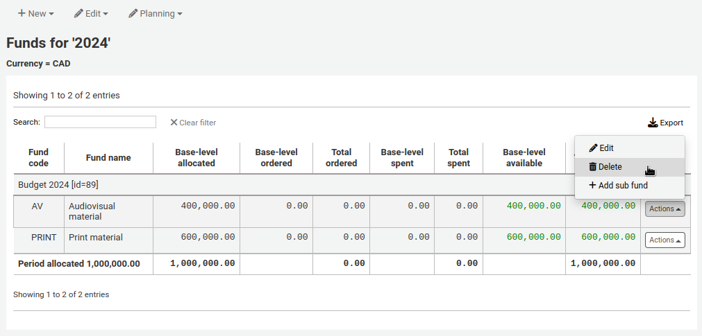
Click ‘Yes, delete this fund’ in the warning message.
規畫預算
進入基金清單後，按下 ‘規畫’ 鈕，選擇使用該筆預算的方式。
If you choose ‘Plan by months’ you will see the budgeted amount broken down by months.
On the left are filters that can be used to limit what is shown in the table.
Select planning type: choose to plan by months, libraries, itemtypes, or any authorized value category used as statistic 1 or 2 in the funds.
Show my funds only: this will filter out funds of which you are not the owner.
Show active funds only: this will filter out funds that have not been used (no ordered amount).
Show actual/estimated values: this will alter the table to show the ordered amounts as well.
To hide some of the columns, uncheck the boxes at the top of the table.
From here, you can plan your budget spending by manually entering values or by clicking the ‘Auto-fill row’ button. If you choose to auto-fill the form the system will try to divide the amount accordingly, you may have to make some edits to split things more accurately.
Once your changes are made, click the ‘Save’ button.
备注
If a budget is locked, it will not be possible to edit the values.
To export your data as a CSV file, enter a file name in the ‘Output to a file named’ field, in the ‘Export’ section on the left, and click the ‘Submit’ button.
EDI 帳號
在此設定連絡採訪代理商的資訊。
說明
開始之前，至少需要在 採訪模組設定一個代理商。
點選 ‘新增帳號’ 鈕，就能新增帳號資訊。
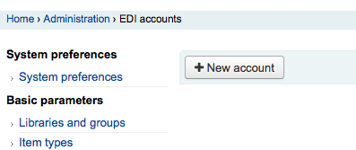
從出現的表單鍵入代理商的資訊。
請參閱 :ref:`供應商的 EDI 問題<edi-accounts-for-vendors-label>`部分的 :ref:`acquisitions module chapter<acquisitions-label>`了解每個欄位的描述。
每個代理商將有一個帳號。
圖書館 EAN
圖書館的 EAN 是代理商提供的識別碼，代理商依此寄送帳單。一個 EDI 帳號可以有多個 EAN。
點選 ‘新增 EAN’ 鈕，就能新增 EAN。
從出現的表單，鍵入代理商提供的資訊。
參見 :ref: “供應商的 EDI 問題<library-ean-buyer-identifier-label>` 部分的 acquisitions module chapter ，了解每個欄位的描述。
新增參數
到那裡： 更多 > 管理 > 其他參數
Identity providers
This section is used to define and manage external identity providers for Koha users. This is used when your users come from an external source, such as student management system, active directory, or other similar databases.
Get there: More > Administration > Additional parameters > Identity providers
Adding an identity provider
To add an identity provider, click the ‘New identity provider’ button.
Basic configuration
Code: enter a code for this provider.
备注
The code for the identity provider is limited to 20 characters and can only be composed of letters, numbers, and underscore (_).
Description: enter a name for this provider. This is what you will see in the interface.
Protocol: choose which protocol this identity provider uses.
OAuth
OIDC
Advanced configuration
Configuration: Use this field to enter the configuration specific to the protocol chosen above.
You can click on the ‘Add default OAuth configuration’ button or the ‘Add default OIDC configuration’ button to prefill the field with some default values, which you can change for your own values.
The default OAuth configuration is:
{ "key": "<enter client id>", "secret": "<enter client secret>", "authorize_url": "<enter authorization endpoint>", "token_url": "<enter token endpoint>", "userinfo_url": "<enter user info endpoint (optional)>", "scope": "email" }
The default OIDC configuration is:
{ "key": "<enter client id>", "secret": "<enter client secret>", "well_known_url": "<enter openid configuration endpoint>", "scope": "openid email" }
Mapping: Use this field to define the field mappings from the external database to the Koha borrower fields.
The key is the Koha field from the borrowers table, and the value is the external field.
备注
You can find all fields of the borrowers table in the database schema.
You can click on the ‘Add default OAuth mapping’ button or the ‘Add default OIDC mapping’ button to prefill the field with some default values, which you can change for your own values.
Both the default OAuth mapping and default OIDC mapping are:
{ "email": "email", "firstname": "given_name", "surname": "family_name" }
If the external fields are nested, you can use periods to separate the levels.
For example, if the firstname is nested like so:
<user> <given_name>First name</given_name> <family_name>Family name</family_name> <email>Email address</email> </user>
Use:
"firstname": "user.0.given_name"
This will fetch the “given_name” field in the first “user” field (0 = first).
重要
If you plan on using the auto register function (see below), make sure either “userid” or “cardnumber” are present in the mappings.
重要
Make sure the field for the matchpoint (see below) is included in the mappings.
Matchpoint: choose which field is used to match incoming users to existing users.
备注
The field chosen here must be included in the mappings (see above).
Icon URL: if you want an icon to show on the login screen for this provider, enter the URL to the image file here.
Domain configuration
备注
Enter at least one domain for this provider. Once it is saved, you will be able to add more domains to this provider.
Domain: enter the email domain for incoming users.
备注
Enter an asterisk (*) to include all domains.
Default library: if auto register is enabled, choose at which library new users will be registered.
Default category: if auto register is enabled, choose which patron category will be assigned to new users.
Allow OPAC: choose if patrons of this domain can log into the OPAC with their credentials from this identity provider.
Allow staff: chose if staff members of this domain can log into the staff interface with their credentials from this identity provider.
Auto register: choose whether or not a new patron account is created in Koha when a user from this domain logs in for the first time with their credentials from this identity provider.
备注
If auto register is enabled, make sure the “userid” or “cardnumber” fields are included in the mappings (see above).
Also make sure the default library and default category are set correctly for new patrons. These will be assigned to the new patrons.
Update on login: choose whether or not the patron account in Koha is updated with the external information when a user from this domain logs in with their credentials from this identity provider.
警告
Information may be lost if you change it directly in Koha.
Once the form is completed, click ‘Submit’ to save the new identity provider.
You will need to restart Koha once the identity provider is added.
Adding an email domain to an existing identity provider
You will need to add at least one email domain when creating a new identity provider. You can add more by clicking the ‘Manage domains’ button to the right of the identity provider from the main identity providers page, and clicking ‘New email domain’.
Domain: enter the email domain for incoming users.
备注
Enter an asterisk (*) to include all domains.
Update on login: choose whether or not the patron account in Koha is updated with the external information when a user from this domain logs in with their credentials from this identity provider.
警告
Information may be lost if you change it directly in Koha.
Auto register: choose whether or not a new patron account is created in Koha when a user from this domain logs in for the first time with their credentials from this identity provider.
备注
If auto register is enabled, make sure the “userid” or “cardnumber” fields are included in the mappings of the identity provider.
Also make sure the default library and default category are set correctly for new patrons. These will be assigned to the new patrons.
Default library: if auto register is enabled, choose at which library new users will be registered.
Default category: if auto register is enabled, choose which patron category will be assigned to new users.
Allow OPAC: choose if patrons of this domain can log into the OPAC with their credentials from this identity provider.
Allow staff: chose if staff members of this domain can log into the staff interface with their credentials from this identity provider.
Once the form is completed, click ‘Submit’ to save the new email domain.
Z39.50/SRU 伺服器
Z39.50 is a client/server protocol for searching and retrieving information from remote computer databases. In short, it’s a tool used for copy cataloging.
SRU (Search/Retrieve via URL) is a standard XML-based protocol for search queries, utilizing CQL (Contextual Query Language), a standard syntax for representing queries.
Using Koha you can connect to any Z39.50 or SRU target that is publicly available or that you have the log in information to and copy bibliographic or authority records from that source.
到這裡： 更多 > 管理 > 其他參數 > Z39.50/SRU 伺服器
Koha comes with a default list of Z39.50/SRU targets set up that you can add to, edit or delete.
Adding a Z39.50 target
To find additional Z39.50 targets, you can use IndexData’s IRSpy: http://irspy.indexdata.com or the Library of Congress’s list of targets http://www.loc.gov/z3950/. You can also contact individual libraries and ask for their Z39.50 information.
From the main Z39.50 page, click ‘New Z39.50 server’.
Server name: enter a name that will help you identify the source (such as the library name). It will be saved in capital letters.
Hostname: enter the address to the Z39.50 target.
Port: enter the port number to listen on to get results from this target.
Database: enter the name of the database.
Userid: some servers might be password protected. If that is the case for the server you are trying to add, enter your user ID for that source.
Password: if the server is password protected, enter your password for that source.
Preselected: check this box if you want this target to always be selected by default.
Rank: enter a number representing where in the list you’d like this target to appear. 0 is the top position, then 1, 2, etc.
若空白則目標以字母排序。
Attributes: enter PQF attributes to be added to all queries.
Syntax: choose the MARC flavor used by this target.
Encoding: choose the character encoding used by this target.
备注
If you notice special characters don’t appear correctly when you import records through Z39.50, it means the encoding is wrong. Change it to another and try importing again.
Timeout: enter a number of seconds after which to stop trying to search the target if results aren’t found in a reasonable amount of time. It is helpful for targets that take a long while.
Record type: choose if this is a bibliographic or an authority target.
XSLT file(s) for transforming results: enter one or more (comma-separated) XSLT file names that you want to apply on the search results.
XSLT 允許您。自動處理從外部伺服器取得的記錄。Koha 在 /koha-tmpl/intranet-tmpl/prog/en/xslt/ 資料夾列出若干 XSLT 檔案供參考：
Del952.xsl: Remove Koha items (field 952) (MARC21)
Del995.xsl: Remove Koha items (field 995) (UNIMARC)
Del9LinksExcept952.xsl: Remove links to authorities in bibliographic records ($9), except in the case of 952$9 (itemnumber) (MARC21)
Del9LinksExcept995.xsl: Remove links to authorities in bibliographic records ($9), except in the case of 995$9 (itemnumber) (UNIMARC)
Click ‘Save’.
建議的書目 Z39.50 伺服器
已有若干使用 Koha 的圖書館開放其 Z39.50 供外界使用，其清單在 Koha 共筆：http://wiki.koha-community.org/wiki/Koha_Open_Z39.50_Sources`。也可訪問 IRSpy 找尋其他適合的 Z39.50 目標：http://irspy.indexdata.com。
The following targets have been used successfully by other Koha libraries:
ACCESS PENNSYLVANIA 205.247.101.11:210 INNOPAC
CUYAHOGA COUNTY PUBLIC webcat.cuyahoga.lib.oh.us:210 INNOPAC
GREATER SUDBURY PUBLIC 216.223.90.51:210 INNOPAC
HALIFAX PUBLIC catalog.halifaxpubliclibraries.ca:210 horizon
HALTON HILLS PUBLIC cat.hhpl.on.ca:210 halton_hills
美國國會圖書館 lx2.loc.gov:210 LCDB
LONDON PUBLIC LIBRARY catalog.londonpubliclibrary.ca:210 INNOPAC
MANITOBA PUBLIC library.gov.mb.ca:210 horizon
MILTON PL cat.mpl.on.ca:210 horizon
NATIONAL LIBRARY OF WALES cat.llgc.org.uk:210 default
NHUPAC 199.192.6.130:211 nh_nhupac
OCEAN STATE LIBRARIES (RI) catalog.oslri.net:210 INNOPAC
OHIOLINK olc1.ohiolink.edu:210 INNOPAC
PUBCAT prod890.dol.state.vt.us:2300 unicorn
SAN JOAQUIN VALLEY PUBLIC LIBRARY SYSTEM (CA) hip1.sjvls.org:210 ZSERVER
SEATTLE PUBLIC LIBRARY ZSERVER.SPL.ORG:210 HORIZON
TORONTO PUBLIC symphony.torontopubliclibrary.ca:2200 unicorn
TRI-UNI 129.97.129.194:7090 voyager
VANCOUVER PUBLIC LIBRARY z3950.vpl.ca:210 Horizon
新增 SRU 伺服器
從 Z39.50/SRU 主頁，按 ‘新增 SRU 伺服器’

‘伺服器名稱’ 應使用易於辨識來源的名稱(例如圖書館名稱)。
‘主機名稱’ 是指 Z39.50 目標的網址。
‘連接埠’ 是指Koha取得資料的目標連接埠。
‘使用者帳號’ 與 ‘密碼’ 是伺服器要求的。
勾選 ‘預選’ 盒可以預設開啟該伺服器。
‘等級’ 是此目標在清單出現的次序。
若空白則目標以字母排序。
‘語法’ 是使用 MARC 的方式。
‘編碼’ 的作用係告知系統讀取字元的方式。
‘時限’ 有助於解除長期佔用的問題。在指定時間內找不到時自動跳回。
‘其他 SRU 選項’ 可鍵入外部伺服器的其他選項，如 sru_version=1.1 或 schema=marc21，等。此選項與伺服器無關。
‘SRU 搜尋對映欄位’ 允許您新增或更新從 Koha 可得欄位對映至特定伺服器的索引名稱。
可在 SRU 搜尋欄位加入以下的索引名稱，以縮小搜尋結果。編輯伺服器，並按下此欄位下的修訂鈕。
題名
dc.title
ISBN
bath.isbn
任何
cql.anywhere
著者
dc.author
ISSN
bath.issn
主題
dc.subject
標準 ID
bath.standardIdentifier
表：SRU 對映
‘XSLT 檔案’ 可鍵入多個 (以逗點區隔) XSLT 檔案名稱供搜尋結果使用。
XSLT 允許您。自動處理從外部伺服器取得的記錄。Koha 在 /koha-tmpl/intranet-tmpl/prog/en/xslt/ 資料夾列出若干 XSLT 檔案供參考：
Del952.xsl: 移除館藏 (MARC21/NORMARC)
Del995.xsl: 移除館藏 (UNIMARC)
Del9LinksExcept952.xsl: 移除 $9 連結。略過館藏欄位 (MARC21/NORMARC)
Del9LinksExcept995.xsl: 移除 $9 連結。略過館藏欄位 (UNIMARC)
SMTP servers
Get there: More > Administration > Additional parameters > SMTP servers
This section is used to configure SMTP servers to send emails through Koha.
备注
This section is only available to staff members with the manage_smtp_servers (or superlibrarian) permission.
The default STMP configuration is set in the koha-conf.xml file. But this section allows you to add additional servers.
To add a new server,
Click ‘New SMTP server’
Name (required): give the server a significant name, this is the name that will be displayed in Koha
Host (required): enter the host name or IP address of the server
Port (required): enter the port number provided by your administrator
Timeout (seconds): enter the number of seconds after which an unsent email will result in an error
SSL: choose the security protocol provided by your administrator
Disabled: no security (not recommended)
SSL
STARTTLS
Username: enter the username provided by your administrator
Password: enter the password provided by your administrator
Debug mode: choose whether to enable the debug mode to send additional output to the logs
Default server: choose whether this server is the default one to be used by all libraries
勾選 ‘送出’
Once the server is added, you can select it in the library’s details.
您的意思是？
到那裡： 更多 > 管理 > 其他參數 > 您的意思是？
根據您的 權威 紀錄值 Koha 的搜尋提供 ‘您的意思是？’ 選項。
重要
你的意思是？目前只有 OPAC 的可用。館員介面的選項還在發展中。
以此頁控制讀者搜尋結果的選項。

為了打開搜尋結果的 ‘您的意思是？’ 欄需勾選每個使用的外掛程式盒。現在使用的兩個外掛程式是：
外掛程式 ExplodedTerms 建議使用搜尋廣義/狹義/相關詞彙(如：”紐約(州)”，可點選狹義詞 “紐約(市)”)。當然，圖書館本身需先建立高度階層化的權威資料。
AuthorityFile 外掛程式搜尋權威檔案，並建議使用者可能有興趣的前面 5 個權威書目連結
需要優先權的外掛程式，應把它拉到最上面。

兩個外掛都選取則可在搜尋結果上方看到多個選項

若祗選擇 AuthorityFile 則祗看到權威記錄。
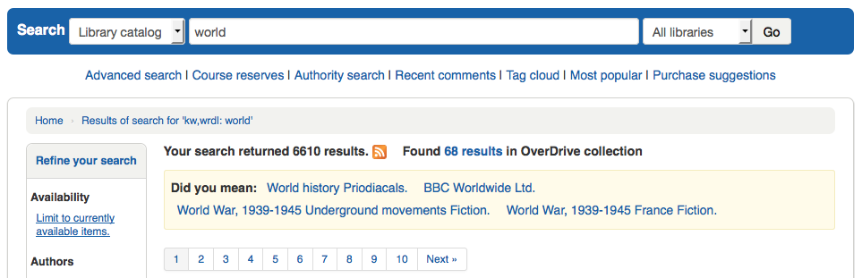
欄位設定
此管理區塊可以隱藏或顯示館員介面的固定表單欄位。
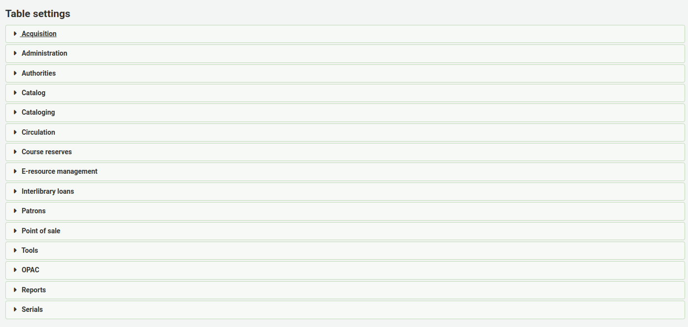
按下欲編輯表單的模組將顯示可用的選項。
控制顯示在有問題表單的欄。若沒有隱藏，則在 ‘預設被隱藏’ 的欄內就沒有勾選標記。
檢視表單時，可見到所有的欄。
若有已隱藏的欄位，則在 ‘預設被隱藏’ 欄有勾選標記。
檢視表單時將被隱藏。
‘不能切換’ 列是用來防止個別使用者在查看表格時顯示或隱藏此列。
個人用戶可以使用表格頂部的 ‘列’ 按鈕來切換列。
例如，在貨幣表中的 ‘貨幣’ 和 ‘匯率’ 列不能被切換。當使用者點擊 ‘列’ 按鈕時，他們無法選擇這兩列是隱藏還是可見。
請注意，使用 ‘列’ 按鈕顯示或隱藏列，只會在當前使用者和會話中切換它們。一旦使用者註銷，列將回到他們在表設置管理頁面中的預設設置。它不會影響任何其他使用者。
模組 |
表格 |
|---|---|
採訪 |
|
管理 |
|
Authorities |
There aren’t any tables that can be configured from the Authorities module. |
目錄 |
|
編目 |
|
流通 |
|
Course reserves |
|
E-resource management |
|
館際互借 |
|
讀者 |
|
Point of sale |
|
工具 |
|
OPAC |
|
回報 |
|
期刊 |
|
备注
讀者無法在 OPAC 切換欄位顯示。在OPAC表格中，此功能僅允許控制欄位的可見性。
备注
列出的表單可以匯出為試算表、CSV格式，或複製、列印。
音效提示
If you have your AudioAlerts preference set to ‘Enable’ you will be able to control the various alert sounds that Koha uses from this area.
到那裡： 更多 > 管理 > 其他參數 > 語音提示
Koha 的每個對話盒都有 CSS 做為音效的選擇器。

在每個提示右方有個 ‘編輯’ 鈕，藉此編輯預設值。
可以在選擇器盒鍵入其他 CSS 指定提示。如
body:contains('Check in message')
在還入頁面將出現提示音效。
Koha的每個頁面都有獨立的ID標籤讓每個ID指向唯一的頁面
ID 選擇器 (HTML 包括 id=”name_of_id”) 可當成啟動器如：#name_of_selector
SMS 提供商
重要
- This option will only appear if the
SMSSendDriver preference is set to ‘Email’.
备注
Many mobile providers have deprecated support for the SMS::Send::Email feature. It is not recommended for use unless you have a dedicated SMS to Email gateway.
在此鍵入電信公司的所有資訊，才能經由電子郵件協定送出 SMS 給讀者。

美國的供應商：
Mobile carrier |
SMS gateway domain |
|---|---|
Alltel |
sms.alltelwireless.com |
AT&T |
txt.att.net |
Boost Mobile |
sms.myboostmobile.com |
Project Fi |
msg.fi.google.com |
Republic Wireless |
text.republicwireless.com |
Sprint |
messaging.sprintpcs.com |
T-Mobile |
tmomail.net |
U.S. Cellular |
email.uscc.net |
Verizon Wireless |
vtext.com |
Virgin Mobile |
vmobl.com |
表：SMS 供應商實例
在表單內鍵入新的供應商詳情，並按 ‘新增’ 鈕儲存它。

These options will appear in the OPAC for patrons to choose from on the messaging tab if you have EnhancedMessagingPreferences enabled.

共享本館的使用統計
你可以與Hea社群分享你的Koha使用統計數據。分享你的使用統計數據有助於Koha的發展，因為社群會定期檢查這些統計數據以做出決定。
請注意，統計數據是匿名的，不會分享任何讀者的訊息。
世界範圍內的統計數據可在https://hea.koha-community.org/

共享我的 Koha 使用統計：
預設選擇是 ‘未決定’，這使訊息出現在管理主頁面。
如果你想分享你的使用統計數據，請選擇 ‘是’
如果你不想分享你的統計數據，並且不想看到管理頁面上的訊息，請選擇’不’
你的國家：選擇你的圖書館所在的國家
圖書館名稱：輸入你的圖書館的名稱
圖書館類型：選擇你的圖書館的類型
圖書館網址：輸入你的圖書館網站的網址
最後更新：在這裡你會看到你的數據上傳到Hea網站的最後日期
地理定位：使用右邊的地圖，在你的主圖書館所在的位置打上標記。坐標會出現在地理位置欄中。
圖書館訊息：如果你有一個以上的分館機構，你可以在這裡選擇 ‘是’，將你的所有分館機構放在地圖上。
查看您的公共頁面：這是您在Hea網站上的訊息的URL。
點擊 ‘更新你的統計數據使用情況’ 來儲存訊息。
與 Mana KB 共享內容
Mana KB是一個全球性知識庫，用於共享特定於圖書館的內容。 Koha目前已連接到Mana Kb，以便共享期刊的訂閱模式和報表。這部分用於配置與Mana KB的連接。
到： 更多 > 管理 > 其他參數 > 與Mana KB共享內容
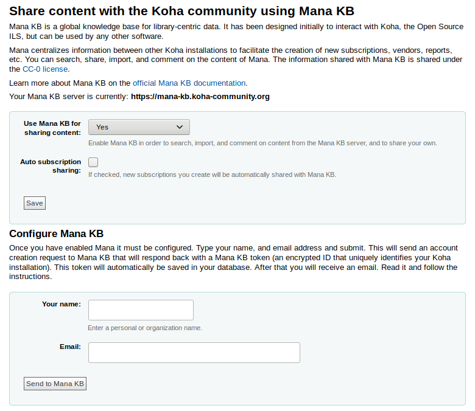
在表格中，選擇是否要使用Mana KB共享內容。默認值為”否，讓我考慮一下”。如果想使用Mana KB，請將選項更改為”是”。如果不想與Mana KB共享，請選擇”否”，這將從管理主頁中刪除藍色矩形。
本節的其餘部分將預設您選擇”是”。
選擇是否要自動分享您的訂閱類型。這代表每次在期刊模組中創建訂閱時，該訂閱會自動與Mana KB共享，其他圖書館將能夠複製該訂閱。
為了配置Mana KB，必須取得Mana KB令牌以驗證在Mana KB服務器上安裝的Koha。
在”您的姓名”欄位中輸入您的姓名或機構的名稱。
在”電子郵件”欄位中輸入您的電子郵件。確保您可以登入此電子郵件信箱，因為您將通過電子郵件收到更多訊息。
將您的資訊發送到Mana KB後，將獲得Mana KB令牌。

在收到的電子郵件中，點擊確認連結，並確認您不是自動完成Mana KB設置的機器人。
其他欄位
This section is used to add custom fields to order baskets, invoice, serial subscriptions, and accountlines.
要添加新欄位，請先選擇要添加的表格。
訂閱籃 (aqbasket): 添加到 aqbasket 的欄位將顯示在 建立新的訂閱籃 或修改 採訪模組 的現有訂閱籃.
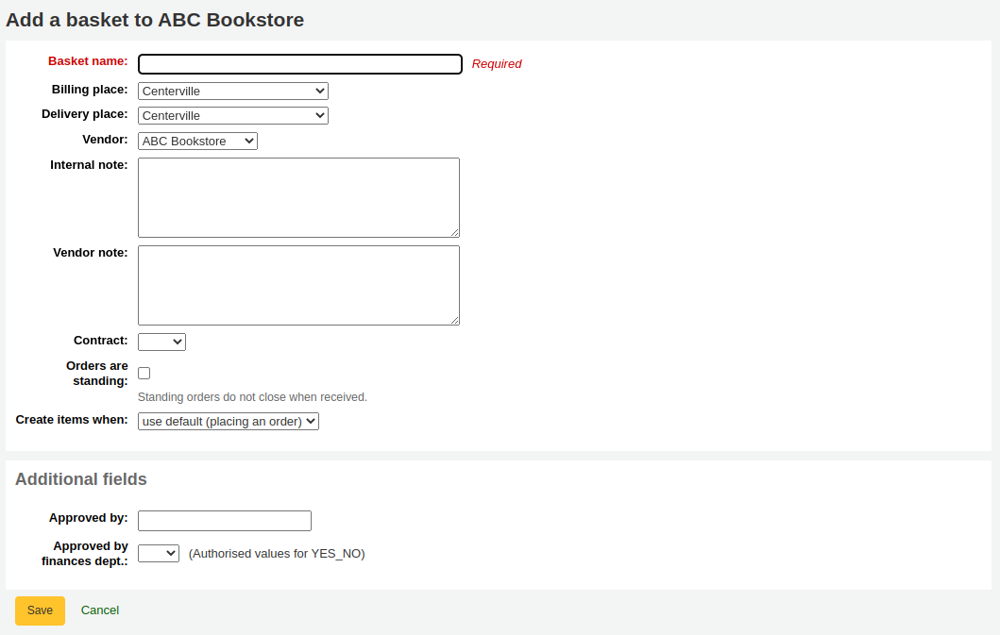
Order lines (aqorders): a field added to aqorders will appear when adding orders to a basket or editing orders in open baskets.
Invoices (aqinvoices): a field added to aqinvoices will appear when viewing an invoice in the acquisitions module.

訂閱（訂閱）：添加到訂閱的欄位將在 建立一個新的訂閱

Account lines (credit) (accountlines:credit): a field added to account line credits will appear when paying or writing off charges in a patron’s account or when creating manual credits.

Account lines (debit) (accountlines:debit): a field added to account line debit will appear when creating a manual invoice

點擊”新增欄位”
填寫表格
名稱：想要顯示的欄位名稱
容許值範圍：如果要添加欄位下拉選單，請在此處選擇一個:ref:容許值類型 <existing-values-label>. (如果需要，也可以 新增一個新的容許值類型）
MARC欄位：對於其他訂閱欄位，可以將其連接到MARC欄位。其他欄位將自動為此MARC欄位填入對應記錄的值。
备注
您只能從兩個選項擇一（容許值或MARC欄位）
警告
若選擇 MARC 欄位，必須使用此格式：欄位$分欄
例如： 590$a
可搜尋：勾選此框就能使用此欄位搜尋您的購物籃和訂閱。
訂閱籃可搜尋的其他欄位將在 :ref:`進階搜尋訂單 <searching-orders-label>`表中
Invoice searchable additional fields will be available in the invoice search form
訂閱可搜尋的其他欄位將在 :ref:`進階搜尋訂閱<searching-serials-label>`表中
其他欄位範例
範例 1： 以 容許值 新增訂閱欄位
您可追蹤訂閱此期刊的系所
在 ‘名稱’ 欄位，輸入 ‘系所’
在 ‘容許值範疇’ 欄位，選取系所
勾選 ‘可搜尋’ 框
當您在 :ref:`新增訂閱<add-a-subscription-label>`時，則該欄位將出現於”其他欄位”中，並帶有其容許值下拉選單。
檢視訂閱時，此欄位將出現在 ‘其他欄位’。

因為將此欄位設定為可搜尋，所以同時可以從期刊訂閱搜尋它。

Example 2: Additional subscription field using MARC field
於訂閱詳情頁面檢視書目資訊時特別有用。在此範例中，新增 MARC 21 的欄位 521$a 加入適用讀者註。
在 ‘姓名’ 欄位，輸入 ‘適用對象’
在 ‘MARC 欄位’，輸入 ‘521$a’
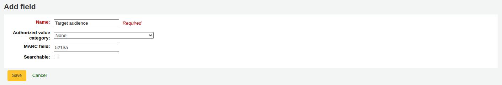
备注
不能從訂閱表單編輯此欄位。請經由 編目模組 新增或變更此欄位的值。
檢視訂閱時，書目紀錄內的欄位及資訊將顯示在 ‘其他欄位’ 下。
Example 3: Free text invoice additional field
If you need to enter additional information in invoices, such as the number of the check used to pay for the invoice, you can choose not to use an authorized value at all.
In the ‘Name’ field, enter ‘Check #’
勾選 ‘可搜尋’ 框
The new fields will be displayed when viewing the invoice in the acquisitions module.
Because we made the field searchable, it will also be in the invoice search.